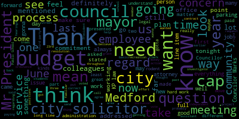
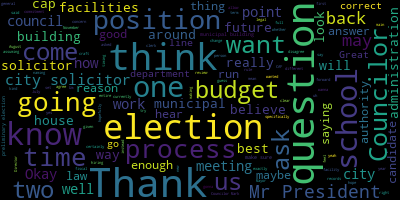
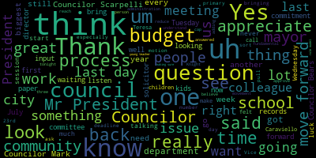

AI-generated transcript of City Council 06-29-21
English | español | português | 中国人 | kreyol ayisyen | tiếng việt | ខ្មែរ | русский | عربي | 한국인
Back to all transcripts
Heatmap of speakers
[Caraviello]: Good evening, everyone. 26th regular meeting of the Medford City Council. Mr. Clerk, please call the roll. Councilor Bears. Present.
[Hurtubise]: Councilor Thompson. Present. Vice President Knight. Present. Councilor Martins. Present. Councilor Morell.
[Caraviello]: Present.
[Hurtubise]: Councilor Scarpelli. Present. President Caraviello.
[Caraviello]: Present. Please rise and assume the flag. I pledge allegiance to the flag of the United States of America, and to the republic for which it stands, one nation, under God, indivisible, with liberty and justice for all. Before we start the meeting tonight, tonight's the last night for our TV station manager, Pat Gordon. And Pat, we just want to thank you for your service for all the years and the time it's ours. So congratulations and good luck on your new position. Councilor Marksley, do you want to?
[Marks]: Yes, Mr. President. Thank you very much, Mr. President. Patrick Gordon has been an instrumental part of this team since he came on with the city. And in particular, Mr. President, over the 18 or so months of the pandemic, Patrick was the one that brought us into the 21st century, allowing us to communicate with our constituents that were unable to attend meetings during the pandemic. And he was instrumental in bringing up Zoom for us, not only for the council meeting, but many other public meetings in this city. And I credit him, actually, for having us keep open government during the pandemic. And I wish him well in his new endeavors. And hopefully, at some point, we'll see him again, Mr. President.
[Morell]: Thank you, Mr. President. I mean, I'm scared to say nice things because I don't want to see you go, but yeah, to echo Councilor Marks, just the work you always do is tremendous, but the work you did, particularly during the pandemic to get us dialed in from home in the chambers, allowing the public to engage, you know, doing that with your own equipment and really kind of bootstrapping to get this a really successful system, I think speaks volumes to just how you operate and have operated since you've been here. So you will be sorely missed and I thank you for your years of just excellent service to the city and to the council.
[SPEAKER_02]: Councilor Tocco.
[Falco]: Thank you, Mr. President, Patrick. Thank you so much for all your hard work. Last year when I was president, we were going through this together and I called you on a regular basis just to make sure that all the technology was working fine. And we made that transition from Zoom back into the council chambers. You were instrumental, be humble, leave. I know it took you many hours to test everything out and to get it working. it was, it was seamless. We came back, you had everything going, everything working absolutely to perfection. And I can't thank you enough for that. And for all of the hours that you've put in in the past year, year and a half, I know you've been working nonstop, not just with our meetings, but with all of the municipal meetings. So thank you so much for all your hard work. Congratulations, good luck, best wishes, and thank you for all your hard work.
[Caraviello]: Thank you.
[Knight]: Pat, I'm going to be very sad to see you go. We've had a lot of laughs over the past couple of years, and I'm very grateful that you came and took over TV3. It's been quite a run for you, brother. You've put in a ton of hours, overworked and underpaid, and I'm very sad to see you go. You've done an excellent job for us here at MedFed, and you've really helped bring us to the 21st century, so thank you very much for all you've done. I wish you the best of luck over in Everett, and I hope you don't recommend them to steal anybody else from us over here.
[Bears]: Councilor Bears. Thank you, Mr. President and Patrick. I mean, I don't think we can say enough about how far above and beyond you've gone in your entire service, you know, running community media for an entire community by yourself, you know, up until just a few months ago, I think, and what you've done for us in the pandemic. And personally, I can't thank you enough for making me look good on camera. So I really look forward to seeing what you can do. and hopefully building a budget that could attract someone like you back here in the future.
[Scarpelli]: Uh, Pat, uh, this is, uh, it's bittersweet because, uh, you know, you went through a tough time with all of us and, uh, it was your leadership that pulled us through. So I don't think people realize how much you did do. Um, I know that when you're talking about a position where it takes you away from your family, you, you know, you, you see some people get bitter and angry. I've never, ever saw that in you at all. Um, I'd see you on a Tuesday after a marathon session, the school committee, and then thinking that we have a marathon session on Tuesday and thinking your week's done, but no, you have to do another committee meeting on a Wednesday and you're a one man team. So No wonder why other communities came in and tried to scoop you up and why you're leaving. So it hurts that you are leaving, but, you know, you took a lot of junk from a lot of ignorant people that you had to deal with and listen to that stuff. But I just warned you, yeah, we had the flyby, it was supposed to start, and then the flyby. So all I want to, let it be saying that, Thank you, congratulations for all your hard work here. It's something that you set Medford on a great track. The award you received, I think, is something we'll never forget. Thanks to you, and have a great time in the neighboring community.
[Caraviello]: Thank you very much. Again, on behalf of all my colleagues and everyone at the City of Medford, thank you again. During some tough times, you kept us together and kept the show on the road again. Good luck in your new position, and hopefully we can hire so many of equal talent of you. Thank you very much, Mr. President.
[Marks]: Just just if I could customize on I've stated this on many occasions. The city of method charges a 5% fee on cable bills. And that 5% fee is a franchise fee that's supposed to go to PEG access, which is public education and government channel. Only 2% of the fee goes back into providing local programs, educational programs, and government access, Mr. President. The rest, the 3%, goes into the general office. And I think what we're seeing, Mr. President, this has nothing to do with Patrick, what we're seeing is a sorely underfunded PEG local access station, you know, not similar to other communities that have a large office with multiple employees. But here we are with one employee and an assistant, Mr. President, which just is not enough to run a peg access in our community. So I respectfully ask once again, that this be looked at by the city administration and fully fund peg access. So the residents can reap the benefits, Mr. President.
[Patrick Gordon]: Thank you very much. I want to admit that I just came tonight because I thought we were getting fed again. It's not a budget meeting, I guess. It's been an absolute pleasure working with all of you. Um, there's obviously differences in politics and opinions, but it's quite obvious that you all have this city's best interest in mind. And it's, it's pretty clear every week seeing that, you know, work play itself out. So thank you very much. Thank you.
[Scarpelli]: Thank you. Good luck. Good luck.
[Caraviello]: Hey, uh, vice president night.
[Knight]: A motion to suspend the rules to take several papers out of order, Mr. President.
[Caraviello]: On the motion by Vice President Knight to take papers out of order, seconded by Councilor Scarpelli. All those in favor? Aye. Opposed?
[Knight]: Motion passes. Paper 21431, Mr. President, a common victuals license. Which one was it? 21431.
[Caraviello]: 2-1, petitions, presentations and similar papers. 2-1-4-3-1, petition for a common fixture license for Calwind Management doing business as Town Place Suites slash Fairfield Inn Suites, 85 Station Landing, Medford, Mass. Do we have anybody from Calwind Management here on the call? Anybody from Calwind Management on the call? Maria Costa, Marcy Costa, where are you? Marcy Costa, as a clerk, can you unmute Marcy, please?
[SPEAKER_20]: Can you all hear me?
[Caraviello]: Yes, Marcy. Are you here representing town, please?
[SPEAKER_20]: I am, Mr. President. Thank you. Marcy Costa from McDermott, Colty, and Miller at 28 State Street in Boston, Massachusetts, on behalf of the applicant.
[Caraviello]: OK. Licensing Chairman, Councilor Scarpelli.
[Scarpelli]: Thank you, Mr. President. Now, this is for a petition for a conflict license at Stacey's Landing for Tower Place Suites, Fairfax. Mr. President, do any of my colleagues have any comments or questions before I recommend approval?
[Knight]: Vice President, a couple things. First of all, Mr. President review of the application. It appears that this entity has the ability to employ over 100 full of part time employees. So this seems like this will be something that's a great addition to our community. However, in looking at the application, the petition does seek hours from six a.m. to one a.m. And that would, I believe, require them to petition this council at a later date for an extended hours permit.
[Caraviello]: That's correct. The 11 o'clock would be the latest closing time. Under the current permit, you'd have to come back for a special permit for extended hours. 7 to 11, I think. Yeah, the normal permit is 7 to 11.
[SPEAKER_20]: Excellent, not a problem. We'll be sure to complete all the necessary paperwork and come back before you for that extended permit request.
[Caraviello]: He'll give you the process to apply for the extended hours. Any further questions on this? Councilor Morell.
[Morell]: It just says on the Board of Health paper that it will be inspected on 6921. So I just don't know if we have a missing an update in here on that. Or we'll get an update at some point. I'm just noting at the Board of Health document says it will be inspected on 6921, which is now in the past. So I just don't know if there's an update on that.
[Caraviello]: Any further questions? Council Members? On this paper? No. On the motion by Councilor Scott Felly, seconded by Vice President Night. Clerk, please call the roll.
[Hurtubise]: Councilor Bears? Yes. Councilor Falco? Yes. Vice President Night? Yes. Councilor Marks?
[Unidentified]: Yes.
[Hurtubise]: Councilor Morell?
[Unidentified]: Yes.
[Hurtubise]: Councilor Scott Felly? Yes.
[Caraviello]: Yes, second affirmative, negative motion passes. 2-1, hold on a second. 2-1, motion to take paper 2-1, 3-8-1 from the table by Vice President Knight. Second and by. Seconded by Councilor Bears. All those in favor? All opposed? Motion passes.
[Knight]: Vice President Layton. This was a paper that was tabled a couple of weeks ago at my request as I was seeking a double pole to be removed from Burgadave. This paper was requesting a grant location to access the Greenland extension to provide certain services from Verizon. Double pole has been removed and I'd like to thank my friends at Verizon and their Comcast for the work that they did in making sure that that happened expediently. Last week, I forgot to take this off the table. The president put it up for a vote. So I'd ask my colleagues to stay in the paper this evening. I do believe we have Karen Levesque that's going to be joining us from Verizon on the call.
[Caraviello]: Richard Foreman, where are you? Are you here from Verizon? Mr. Clerk, can you unmute Mr. Foreman? Good evening, Mr. Foreman. Are you here from Verizon?
[Hurtubise]: Yes, I am, sir. Good evening.
[Caraviello]: How are you?
[Knight]: Mr. President, this is the paper that would provide access to the Greenland extension for certain public utility services. There's a lot of work that's going on in that area right now. I do believe resurfacing plans are on file with the city engineer's office, and I certainly have no problem with the petition and move for approval of the paper.
[Caraviello]: On the motion by Vice President May for approval, seconded by second by Councilor Bears. Any more discussion? All those in favor? Aye. All those opposed? This is present. Motion passes. President Scarpelli.
[Scarpelli]: We while we're on this bench and paper 21432. Regards to College Avenue, Medford, approval of easement to Tufts University.
[SPEAKER_02]: Hold on, hold on.
[Caraviello]: One at a time. Okay, 21432 to President Caraviello and all honorable members of the Medford City Council. Mr. President, members of the council, I respectfully request and recommend that your Honorable Body, pursuant to provisions of General Law, Chapter 40, Section 3, approve and authorize the grant of an easement to Tufts University, extending its perpetual exclusive right in, under, on, and over the easement area for the purpose of maintaining and utilizing the plaza for access to the new Cummings Center building being constructed on Tufts property for access to other parts of the Tufts campus, for a seating area, a gathering place, and for a university activity. The easement will allow Tufts to construct a system to provide for telecommunications, distribution cables, and to serve campus needs. For your information, I am submitting a copy of the document containing the strength of easement along with the plan setting forth the area. Representatives from Tufts will be in attendance at the council meeting to answer questions, especially submitted on Mayor Graham of the grant. Good evening, Mr. Abruzzi, are you here from Tufts University? Mr. Clark, can you unmute Mr. Abruzzi? Good evening, Mr. President.
[SPEAKER_01]: Thank you, Mr. President. Robert Abruzzi. Attorney here on behalf of Tufts University with me is also Rocco DiRico and Ruthie Bennett from the university, the project director. So we're here tonight seeking the council's approval of an easement in connection with the university's Cummings Center project on College Avenue. More specifically, the grant of this easement will allow for a more aesthetically pleasing transition between the Plaza, which is in front of the coming center and the College Avenue sidewalk below. As you know, there's a quite a great gradient variation in that area. The limits and the boundaries of the easement were worked out in conjunction with the university consultation with the engineering department of the city. And the easement document itself has been approved by the city solicitor. So at this point, I'll turn it over to Ruthie Bennett who will detail for the council's benefit a little bit more information about the easement request.
[Caraviello]: Thank you Mr. President. Mr. Clerk, if you could unmute Ruthie Bennett. Good evening, Ms. Bennett. Name and address of the record, please.
[Ruthie Bennett]: Sure, Ruthie Bennett, Tufts University. Thank you very much for letting me present this evening. So first of all, of course, I've been on Zoom for 15 months, and tonight my internet is unstable, so I'm going to try to get through the presentation. Is there a way that I could share my screen to show you some of the drawings? Is that possible?
[Caraviello]: Mr. Clerk, can you yell? One second, the clerk will take care of that for you.
[Ruthie Bennett]: Okay. Just let me know when I should try to do that.
[Caraviello]: Okay, Ruthie, you're all set.
[Ruthie Bennett]: Great. Okay. So hopefully you're seeing my screen now, which is a drawing of the building.
[Caraviello]: Yes.
[Ruthie Bennett]: Okay, great. So I just want to orient the council for a minute. So basically, this is College Avenue on the bottom of the screen. These are the MBTA tracks and Boston Avenue. And this is the Cummings building on our site. This is the plaza in front of the building. This is the main entrance to the building. This is the sidewalk that we were talking about that slopes up College Avenue. This is the pedestrian bridge that the MBTA has just put in. And this is the cafe that's open to the public. This is the easement, this strip of land. It's about 1,100, 1,200 square feet. You can see it's about 9 1⁄2 feet here, 7 1⁄2 feet here, and it's about 150 feet long. And let me show you what the easement is in a rendering, because it's hard to understand what we're really talking about. So basically this is the Cummings building. And as you know, the sidewalk here slopes, it's about a five to six foot slope from the bottom over here, all the way up to the pedestrian bridge. And it was very important for us to have an accessible connection from the sidewalk to the main entrance of the building. So the plaza, of course, is flat and the sidewalk is sloping up in this direction. But right here, there is an accessible connection from the sidewalk into the main entrance of the building. In this blue area here, this is approximately, this is my rough drawing, but approximately the easement area. So this is the courtyard, the plaza for the building. These are the steps going up, the flat plaza, and then steps up again. And if we didn't have this easement, there would be a flat courtyard, flat plaza, and then there would be this drop, basically a drop from here down to six feet to get to the sidewalk. And there would be a wall about six feet, and then going down to this accessible entrance, and then the wall would continue again. So in working with the engineering department, what we proposed and they thought was a good idea was to have, instead of having a wall here, we would have this landscaping, basically, instead of a retaining wall, this is a sloped area. So all of this green that you see is basically sloping from the courtyard down to the sidewalk. And then here it starts to slope up to meet the sidewalk. So what we're really asking for is an easement to have some basically grassy area and some xeriscaping, so drought-resistant plants. This is the accessible connection. So this part of the sidewalk that's in this part of the plaza that's accessible is on city land. The same thing here, basically grass and some xeriscaping. Oh, well, there's just kind of a slope that you walk next to. It's a much nicer pedestrian experience. This is a picture of before the project happened, this is basically the slope that happens at the site between the sidewalk and the site, as you know that sidewalk going up here is really steep, and then the site itself kind of dropped off. We're really trying to make it a situation where it's nice for pedestrians. There's my internet connections unstable, but where they're basically walking next to, like I said, kind of a landscaped area. We're not going to build anything else on this area. It's just landscape. We will maintain snow removal, trash removal. This will always be an open, accessible connection from the sidewalk to the front of the building. We can take any questions if you'd like. And again, if my internet goes out, then I think Rocco and Mr. Abruzzese can respond, but I'd be happy to take questions.
[Caraviello]: Thank you. I'll assume that that makes the plaza handicap accessible.
[Ruthie Bennett]: Yes, exactly right. This is a handicap accessible connection from the sidewalk to the building, the whole plaza and the cafe. So yes, this is all accessible from the sidewalk right here. Correct.
[Caraviello]: Thank you. Question.
[Morell]: Thank you, Mr. President. Just remind me, that whole plaza is open to the public, correct?
[Ruthie Bennett]: Correct, yes. And this is a cafe to the public as well. And actually, there's a separation between the cafe and the building. Sorry.
[Morell]: I think you said the cafe is open to the public as well, correct?
[Ruthie Bennett]: Yes. Sorry, I did. I'm sorry. Yes, cafe is open to the public. Yes.
[Caraviello]: Move approval, Mr. President. On the motion by Vice President Knight for approval, seconded by Councilor Scarpelli. All those in favor?
[Bears]: Aye.
[Caraviello]: All those opposed? Motion passes. Betsy. Mr. Bruese, Betsy, and Rocco, thank you very much.
[Ruthie Bennett]: Thank you all. Thank you very much. Thank you.
[Scarpelli]: 21437. 21437.
[Caraviello]: 21437. Okay. Yep, I got it. 21437, dear Mr. President and Councilors, I respectfully request and recommend that the honorable body approve the following amendments to revise ordinance entitled Compensation Plans Leave Ordinance Chapter 68, Personnel. Amendment to the revised Ordinance Compensation Plan and Leave Ordinance Chapter 66, Personnel be it ordained by the Medford City Council of the City of Medford in Chapter 66 entitled Personnel Article 2 entitled Classification Compensation Plans Section 66-40 entitled Public Safety Personnel is hereby amended as follows. Section 1. In section 66.40, effective January 1, 2020, add 2% of the present amount of each step within the grades shown below to the said present amount of each step and adjust the sum thus obtained to the nearest and highest figure the following grades. PS-2, Sergeant. PS-3, Lieutenant. PS-4, Captain. PS-5, Chief. Section two. in section 66.40, effective January 1, 2021. Add 2% of the present amount of each step within the grade shown below to the said present amount of each step and adjust the sum, thus obtain the nearest and highest figure for the following grades. PS2, Sergeant, PS3, Lieutenant, PS4, Captain, PS5, Chief. Section three, in section 66.40, effective January 1, 2022 at 2% of the present amount of each step within the grade shown below to the set present amounts of each step and adjusted sum does obtain the nearest and highest figure the following grades. PS2 Sergeant, PS3 Lieutenant, PS4 Captain, PS5 Chief. This amendment is requested due to a recently negotiated agreement with the Medford Police Superior Officers Union that extended the predecessor agreement to June 30, 2022. It's estimated that the contract will cost approximately $307,656 in retroactive funds in fiscal year 2021. There is available funding to cover this in the police department and the personnel budget. Sincerely, Mayor. Good evening, sir.
[SPEAKER_06]: Mr. President, Lawrence Rogers, 100 Main Street. I'm the vice president of the Med Police Fair Results Association. Mr. President, Met Police Ferry officers have been without a contract since June 30th, 2019. Prior to that date, we'd be in negotiations with the previous administration. Once the new administration took over and due to COVID, there were numerous postponements. On May 5th, we came to an agreement with the city on a new collective bargaining agreement. On May 10th, the union unanimously ratified the contract. Since then, we have heard nothing to be presented for the council. Mr. President, we respectfully request that the body approve the resolution and also waive these three readings due to the fact that the summer recess is coming up and due to the fact that it's going on two years without a contract. Thank you. Questions?
[Marks]: Councilor Markswell. Thank you, Mr. President. And I want to thank all our superior officers in this community that haven't missed a beat over the last 18 months during the pandemic. This is, in my opinion, a very modest raise. It's comparable to other raises with other unions throughout the community. And where this has been outstanding since, as we stated, 2019, Mr. President, I've been on record for many occasions not waiving the three readings. And the reason why, Mr. President, is that the three readings require open transparency within our community. And I've always been opposed to waiving the readings. However, in certain circumstances, Mr. President, when, in my opinion, when raises the three years and arrears, that those are the certain circumstances. Tonight, Mr. President, I will be supporting not only this paper, but I will offer the formal motion that the three, what do you call it? Readings. Readings, thank you. The three readings be waived, Mr. President, based on the fact that this has been outstanding for over two years. Thank you, Mr. President. Thank you. Thank you. Any further discussion?
[Knight]: Vice President Knight. Mr. President, thank you very much. And through you to Mr. Rogers and the rest of the security officer staff, thank you for the work you do. I have no problem supporting this matter before us this evening. I do feel as though a strong contract negotiated in good faith between the administration and the union does make this community stronger. And I thank you for your service.
[Caraviello]: Thank you. Any further questions?
[Knight]: Mr. President, I would move for approval and I would also second Councilor Markswell's amendment.
[Caraviello]: Okay, on the motion by Vice President Knight, but that's the amendment. On the motion by Vice President Knight, as amended by Councilor Marks to waive the three readings, seconded by Councilor Scarpelli.
[Marks]: And if we could just record the waiving of the three readings, Mr. President, because of the contract being in arrears for almost three years.
[Caraviello]: Thank you. Any further discussions? Okay, Mr. Clerk, please call the roll. Councilor Scarpelli. but this is a money paper that requires a roll call vote.
[Scarpelli]: Councilor Peers.
[Hurtubise]: Yes. Councilor Falco. Yes. Vice President Knight.
[SPEAKER_06]: Yes.
[Hurtubise]: Councilor Marks.
[SPEAKER_06]: Yes.
[Hurtubise]: Councilor Morell.
[Morell]: Yes.
[Scarpelli]: Councilor Scarpelli.
[Morell]: Yes.
[Scarpelli]: President Caraviello. Yes.
[Caraviello]: Seven in favor of zero opposition motion passes. Motion to refer back to regular business. Oh, did you have one more?
[Marks]: No, that was the one. Okay, thank you. It was a different number, but the number was changed. The number was changed. Okay.
[Caraviello]: Motions, orders, and resolutions offered by Vice President Knight, be it so resolved that Mr. DeCato send a deep and sincere condolences to the family of Rick Sweeney on his recent passing. Vice President Knight.
[Knight]: Yes, Mr. President, Rick Sweeney was a gentleman who worked a long career in the Metropolitan County. He had recently retired. as evident in many that work in public safety, especially by a service, very shortly after retirement, he had succumbed to health issues. Rick was a great person, and Rick was one of those people that, you know, a lot of people would say, if you had a problem with Rick, it was probably something that was wrong with you, because Rick was a great guy. I got the pleasure of meeting Rick when he became a member of the Elks. He was a great participant in a number of charitable organizations and charitable efforts that the Elks have put forward, and he's someone who will be sorely missed, Mr. President, so I offer this resolution. and recognition of the work that he did in this community, and recognition of the fact that for over 30 years, he put his life on the line as a firefighter here for the residents of the community, and he's someone that should be remembered. So with that being said, I ask my council colleagues to support this.
[Marks]: Thank you, Mr. President. I want to thank Vice President Knight for putting this on. Ricky Sweeney, if you knew him, you loved him. That was the type of person he was, Mr. President. 32 years as a firefighter, past Vice President of Local 1032, As Councilor Knight mentioned, an outstanding member of the Method, an active member of the Method Elks. And I want to send my condolences to his wife, Kelly, his children, Aaron, Jen, and his firefighter son, Joseph, who serves currently as Mr. President. And anyone that knows Ricky knew he loved to spend time in Maine and loved to be around his family. And the one thing that I hear over and over from people was, that I guess Ricky was a master carpenter. And if he ever needed any help, he was the first to come with his skills, Mr. President, and assist. And never looking for anything other than the fact that he liked to help people. So I'd like to, if Councilor Knight seems fit to, I'll have you do it. Honor him by naming this meeting, Mr. President, in his honor. And I want to thank council vice president for putting this on. Thank you. And how's this?
[Bears]: I just want to thank you. Um, counsel Councilor Knight Councilor Marks, uh, send my condolences to the family. Uh, Mr. Sweeney was an uncle of one of my close friends and I know that they are still in mourning. So sending my best to them. Thank you.
[Caraviello]: Thank you. And, uh, I knew Rick, uh, he lived around the corner for many years for me. And, uh, he was at my house with a star from schools and I needed some help. So, uh, Again, look at also the family, he was a good guy and he's gonna be messed up. On the motion by Vice President Knight, as amended by Councilor Marks and seconded by, seconded by Councilor Falco. All those in favor, please stand for a moment of silence. 2-1-4-2-4 offered by Vice President Saint, being so resolved, the University of Colorado extended deep and sincere condolences to the family of Paul Kavanaugh on his recent passing. Vice President May.
[Knight]: Mr. Kavanaugh, Mr. President, was a gentleman who was also a member of the Elk's Elk's Elk's Elk's Elk's Elk's Elk's Elk's Elk's Elk's Elk's Elk's Elk's Elk's Elk's Elk's Elk's Elk's Elk's Elk's Elk's Elk's Elk's Elk's Elk's Elk's Elk's Elk's Elk's Elk's Elk's Elk's Elk's Elk's Elk's Elk's Elk's Elk's Elk's Elk's Elk's Elk's Elk's Elk's Elk's Elk's Elk's Elk's Elk's Elk's Elk's Elk picked up the torch where he left off in her efforts in volunteering in the community. We all know Carrie from Channel 25. She hosted last year's mayoral debate as a matter of fact, two years ago, the mayoral debate as a matter of fact. But Paul was just a great person. His wife was a school teacher and they met through public schools for a number of years, and they're really some people that have given a lot to this community. And Paul had a very public battle with cancer and he succumbed to the effects thereof, and he'll be sorely missed, Mr. President. So with that being said, I asked my council colleagues to support the resolution.
[Caraviello]: Any further discussion? So on the motion by Vice President Knight, seconded by Councilor Falco. All those in favor? Motion passes. Please rise for a moment of silence. 2-1, 4-2-6, offered by Council Marks, being resolved that Teresa Castagnetti, lead teacher coach in the English Learners Department for the Medford Public School be recognized for a 45 year commitment and leadership to the students of Medford on a recent retirement. Council Marks.
[Marks]: Thank you, Mr. President. It's my honor to stand before this council and the residents of this community to honor one of Medford's finest, Mr. President, Teresa Castagnetti, I think we all, behind this reel, know Teresa. Teresa was an advocate for our students, serving as the lead teacher and coach for the English Learners Department for many decades, Mr. President. Teresa had a career that was remarkable. She always stood up for what she believed. Even recently, as of last year, Mr. President, when the condition of the sidewalks and the curbing and the road into the McGlynn and Andrews Middle School was in poor condition and caused trip and hazards for parents, children, and faculty, Teresa was the first one to step forward and kept on stepping forward, bringing this council up to date on the needs. And it was Teresa Castagnetti that I largely credit for making those things happen within that area, Mr. President. Teresa worked in the Kids' Corner daycare as executive board chairperson and secretary from 1992 to 95. So in addition to her duties as a lead teacher, she also found the time to work in the Kids' Corner daycare as an executive member, Mr. President. Back in 2015, annual state award given to a teacher who exemplifies excellence in the education of English language learners. through evidence of best instructional practices, long-term commitment to the education of ELLS, leadership roles at the school's district, level of behalf of the ELLs, mentoring of new ELL teachers through formal induction programs, and strong relationships to parents of ELLs in the community. So back in 2015, Teresa received the Distinguished Award Teacher of the Year, Mr. President. It's a statewide award, and believe me, they were able to recognize the merits of Teresa Castagnetti and her accomplishments. Teresa served as the ELE teacher for the Medford Public Schools from 2016 to 2021. Teresa was a mentor teacher for the Medford Public Schools from 2001 to 2021, over 20 years, Mr. President. She was a supervising practitioner for several general education teachers and Lesley University graduate students to complete their 150-hour internship towards ESL licensure. And from 2008 to 2014, Teresa was selected by DESE to participate on several DESE panels and committees for assessment and development standard settings for the Statewide Language Proficiency Exam and train the trainer cohorts and second language learning and teaching, in which Teresa, in turn, provided professional development for the district, right here, Mr. President. Teresa also served as co-chairperson for the McGlynn Elementary School literacy team. And in 2008, 2009, Teresa co-chaired the creation of the district's first school-based literacy team, which established uniform K through five literacy assessment protocols. and a building-wide K-5 literacy action plan for the McGlynn Elementary School, which was adopted as a model for the district, Mr. President. I can only say, Mr. President, that knowing Theresa over the years, knowing her professionalism, the way she dealt with her colleagues, the way she dealt with parents, faculty, students, I think goes unmatched in our community, Mr. President. And it's only appropriate that I rise here today thanking her for her 45 years of commitment. I would ask that Teresa receive a council accommodation for her years. And I also want to thank her, Mr. President, for putting up with Andrew Castagnetti, her lovely husband for many years, Mr. President, who we all know and love as well. And I just want to thank Teresa and wish her well on her retirement. And I'm sure we're going to see her around the community, Mr. President.
[SPEAKER_02]: Thank you.
[Falco]: Thank you, Mr. President. I want to thank Councilor Marks for bringing this resolution forward and thank Teresa for her 45 years. That's quite a commitment. So I want to thank her for her commitment to the community and her commitment to the Medford Public Schools. When you think about it, 45 years, she has touched the lives of thousands of students and hundreds of teachers that I'm sure she's mentored along the way. And I want to thank her for her commitment in her time and her energy to the community and to Medford public school system and wish her well in her retirement. Thank you. Thank you.
[Scarpelli]: Oh, Scott. Thank you, Mr. President. Thank you, Councilor Markswell and members of the board. I had the privilege and honor of working with Teresa at the Osgoode School and then the McGlynn School. And one thing you realize as a young teacher, you look for role models to follow. And Teresa was that role model. I think that we focused as young teachers to make sure you look at the intangibles. And what we learned from Teresa is her passion for the children, every single one. So she was a true advocate for all of her kids and for our teachers that were at times going through contract negotiations and the nerves that are felt with non-tenured professionals. And she was a rock that kept a lot of young teachers together. And she was a great role model. So as a friend and a former colleague, I want to congratulate her. I actually thought she would never retire. And but it's, it's it's it's sad because I think she still has another 45 years in it. So I appreciate it and wish her luck. So thank you.
[Knight]: Mr. President, thank you very much. One thing that's always amazed me about Teresa was The passion that she had for the job, she never lost that passion and love for the job, even after, you know, four and a half decades of teaching, she was still coming up there advocating for the students when the easy thing to do after four and a half decades of teaching would be to say, oh, the next generation is going to take care of it. She's someone that certainly led by example, put her money where her mouth is, and was always out here working on behalf of the children in the community. So it's something that I think is very grateful, that I'm very grateful for Mr. President, the effort and energy that she put forth, how she went above and beyond to do some of the things that she did. And I want her to enjoy her retirement as best as she possibly can in the lovely neighborhood of East Method.
[Scarpelli]: We can keep going, but it's not televised. Are we still televised?
[Caraviello]: Give it a minute. If we could hold on one second, a little power search here. Curiously, the main plug the whole city.
[Scarpelli]: Quick call text back.
[Knight]: All right. We seem to be back. Thank you, Mr. President. Thank you very much. So with that being said, in closing, I just would like to make sure that Teresa enjoys her retirement or golden years and other 45 years in the beautiful neighborhood of East Medford with her lovely husband, Mr. Piatel, that they enjoy their time together during her golden years.
[Caraviello]: Thank you. And preach that again. Thank you for your years of service, both to the city and to your husband. So again, congratulations on your retirement and good luck. All right. On the motion by by Councilor Marks, seconded by Vice President Knight. All those in favor? Aye. All opposed? Motion passes. 2-1. 4-2-7, offered by Councilor Marks and President Caraviello, be resolved that Sheryl Mayalka will be recognized in her recent retirement from the Medford Public Schools Special Education Department for her outstanding commitment and dedication to the students and families of Medford for the past 40 years. Councilor Marks?
[Marks]: Thank you, Mr. President. I want to thank you for co-sponsoring this. Here we are once again, Mr. President, another faculty member within our public schools. 42 years of dedication to the students, the parents, and to our Medford public school system, I think is something that really deserves recognition, Mr. President. Cheryl Mayarco is a well-respected employee of the Medford public schools. in the special ed department, who dedicated over 42 years of service to our most vulnerable students. Cheryl started a career in method as a substitute teacher and instructional aid in 1978. Cheryl became a special education teacher in 1980. For the past 20 years, Cheryl has worked tirelessly as an evaluation team leader, providing mentoring and guidance to newer ETLs and staff members. Cheryl was passionate about the Children of Method, acting as a strong advocate for student needs and making personal connections with every student she assisted. Cheryl was dedicated to caring for the whole child, communicating with parents, caregivers, and educational team members. Cheryl was always expanding her knowledge and her expertise to be prepared and responsive to families and students of method. Colleagues and families remarked that Cheryl went over and above in assisting families and students with patience, positive attitude, and a caring nature. And for all of us that know Cheryl, Mr. President, know these words are completely true. Cheryl gave everything she could to her job. She liked what she did. She excelled what she did. And she really made, I think, a lot of strides in the special ed department. She was someone that you can count on to make sure that if services were needed for a child, Cheryl would fight for the student. You didn't need to hire an outside advocate. It was Cheryl Mayorko that would step up and make sure that each and every child received the proper services, Mr. President, for their education. And parents respected that. um, in our system. Uh, you know, the my uncle couple, which I refer to as Cheryl, my uncle and Robert, my uncle, who served on this body for over three decades, um, and the capacity of council president is and as a member of this body, uh, they were a power couple in this community, Mr. President, for many decades, and both were well respected and leaders in this community, and they continue to be leaders in this community. So I would personally like to ask Mr. President that Cheryl Mayarco receive a council accommodation for her 42 years of dedicated service to our students, our most vulnerable students, parents, faculty, and the entire community, Mr. President. I would like to thank her.
[Knight]: Thank you.
[Caraviello]: Chair recognizes Councilor Caraviello. Thank you, Mr. President. It's always so typical following Councilor Marks. with his dissertations. He kind of takes all the praise out of everything there. I've known Cheryl many years personally. He's a teacher and as a friend. And Bob and I have been friends for many years also. I just want to thank Cheryl for her work to special needs students of Medford. And those are really the kids that really need that extra help that other students don't get. So again, I just want to thank her. for all her work and commitment to the city of Medford. Thank you, Cheryl. Chair recognizes Councilor Scarpelli.
[Scarpelli]: Thank you, Mr. President. Again, thank you, Councilor Marks for this forward. I know another colleague that I work with, and you know the passion that Cheryl, my uncle had for her kids in this community. It spoke volumes, at least to me that, you know, especially when I first started on the school committee, you know, she wasn't afraid to call us and tell us exactly what her kids needed. And, uh, and she was a strong advocate for that. So, um, I wish her well on her retirement and congratulate her for all the commitment she had for our community and our children. So thank you.
[Falco]: Thank you, Mr. President. I also want to thank Councilor Marks and Councilor Caraviello for bringing this resolution forward. I also want to thank Cheryl for her 42 years of service, like I said earlier, very similar. That is quite a commitment. And you don't see that too often these days. That's the thousands of students that she has impacted throughout the years. And the dedication is amazing. And I know, like Councilor Scott probably stated earlier, if there was ever an issue, Cheryl would be the first one to call you and tell us what was going on and what help was needed. And she was always there advocating for the students. And I want to thank her for many, many years of service to the youth of our community, to the Medford Public Schools, and wish her well in her time. Thank you.
[Knight]: Thank you, Councilor Palacio. And if I may, from the chair, Mr. President, I'd just like to also extend a great congratulations to Cheryl. I echo the sentiments of my council colleagues, and I do look forward to seeing her this summer by the pool at her nephew's house, and her niece's house. With that being said, the chair recognizes the gentleman at the podium, Mr. Gallo.
[Giglio]: Giglio, Winthrop Street. I also would like to thank Cheryl when I saw this on the agenda tonight, I wanted to come down. We've known Cheryl since my boys were in grade school, but now more importantly, since we took on the task of taking custody of a three-year-old who's very behind special needs since day one, since the M.E.E.T. program, preschool, kindergarten, now going into first grade, Cheryl has taken the ball with her Not only has she given her the assistance that we thought she needed, but she's given her extra. She's, she's really good. I know Mr. Falco says there's thousands of kids. I can speak for one. Um, and I, I couldn't say thank you any more to, uh, miss Mayako. Um, and again, if, if there's ever a question that she emailed us with and we didn't get back to her, she would call us on the phone just to make sure she got that answer, whatever information she needed. So personally, I'd like to thank miss Mayako as well. Thank you. Thank you.
[Knight]: Thank you very much. Great testament on the motion by Councilor Marks, seconded by Councilor Caraviello. All those in favor? Aye. As amended, Mr. President. All those in favor? All those opposed? The ayes have it. The motion passed. Council paper 21428 offered by Councilor Marks. Be it resolved, the city council asks the city solicitor for a ruling on whether the council, through city ordinance, can craft the process for the naming of any municipal or school building or facility. The chair recognizes Councilor Marks.
[Marks]: Thank you, Mr. President. This was an item that was put on the agenda last week under public participation. And we had a number of residents that came up to speak on their concerns regarding the now, I guess, resolved issue of the naming of the Columbus School. That was somewhat of a lengthy process that took place. I believe there was much division in the community over this process. Many people felt that they weren't heard. Many people felt that they weren't part of the process. And what I'm offering here tonight, Mr. President, is that we take a closer look at the naming of any building in the community, whether it's on the school side or the city side. As a member of the school committee, I can attest to you firsthand. I actually am one of the members that actually voted against the naming of one of our schools back some 20 years ago. And it wasn't because I was opposed to the name, Mr. President. It was more of a process issue I had. And at the time, I felt there wasn't enough public input. There wasn't enough community participation in regards to the selection of the name. And therefore, I actually voted against the naming of one of our, what we refer to as new schools now that are 20 years old. I would say, Mr. President, that in a community of this size, when you're talking about naming a school building, and know that many of these buildings, whether it's a municipal building, or a park, or the corner of an intersection that's named, this has personal memories to people. It has personal feelings. And I think we have to be very mindful of that when we have a process to look at the renaming. I'm not opposed to renaming. I'm not opposed to looking at things in retrospect, but what I am opposed to Mr. President is a process where people feel left out. And if one person feels left out, that's enough for me, Mr. President. And I'm respectfully asking that we ask our city solicitor I don't doubt for a second that the school committee has the authority to name a building, and I've told people that over the past year and a half, that they have the ability to name a building. All I'm asking is whether or not the Medford City Council, through way of an ordinance, can create a policy, Mr. President, that includes the entire community when it comes to looking at municipal or school-owned buildings, and that we create a policy and procedure that ultimately has the goal of incorporating every comment, every person's wishes, and coming out with a process that we can all feel proud of at the end and not have the division that we're seeing right now, Mr. President. And that's all this is trying to accomplish. This is not trying to take away anyone's responsibilities, anyone's duties. It's seeing a concern. When I see a community divided, That concerns me. I've been around a lot of years. And when I see a community divided over an issue, we as legislators, the executive branch, I think have to step up and say, how do we better this process? How do we make it so we don't have to go through this every time we may decide that we want to rename something? And I feel that if this process continues in the manner it's going, all it's going to do is create division. And that would include on the municipal side. So I'm not saying this is strictly a school issue. It's on the municipal side as well. So I'm saying, open up the process to the entire community. And those are my comments, Mr. President. Thank you.
[Bears]: Thank you, Mr. President. Thank you, Councilor Marks for bringing this forward. I certainly don't disagree that a standard process and procedure that would allow for, you know, the renaming of any municipal facility or building or I think we might even want to outline everything we mean here because he meant in corners and streets and that kind of thing would be good. My only concern goes back to what you were saying about who has the authority around school facilities. I think I could support this if we didn't include the school facilities. And I think whatever we come up with for the city side could easily be taken up as a model by the school committee to use for school facilities. I just have concerns around the legal authority as outlined and I wouldn't want I wouldn't want the city solicitor to come back and say, well, you don't have the authority around school buildings, X, Y, Z. So that's my main concern here. Other than that, I agree that having a strong process with clear outcomes, certainly, hopefully we'll bring at least more people together. I don't know if we're ever going to get everyone to agree to every renaming, but I think it's important that we try. Thank you.
[Marks]: So, Mr. President, I appreciate those comments. And I would only state that what I'm trying to do through this resolution is ask our chief legal officer, who is attorney Kim Scanlon, whether or not we first of all have the jurisdiction and authority to create an ordinance that would cover a separate body. The school committee is a separate body. They're an autonomous body. And I understand the boundaries. However, we are the legislative body for the entire community. And the school committee falls under the purview of this city. And if the solicitor came back and said, I don't believe that you can do that as a council through way of ordinance, to me, then the issue would be dropped by myself. I'm not gonna pursue anything. But if the city solicitor came back and said, indeed, you have the ability to do that, I think that would call for a subcommittee or committee of the whole, maybe even a joint meeting with the school committee and the administration to discuss next steps. But all I'm doing is asking what our options are right now. and not forcing anything on anyone at this particular point. So that's all I wanna get across, Mr. President.
[Bears]: Perhaps can we ask two questions instead of one then? Could the city ask the city solicitor for a ruling on whether the council through ordinance can craft a process for the naming of a school building? And then maybe the second one could be a further resolve that the city council ask the city solicitor for an example of a process for the naming of any municipal building or facility, something like that. I just wanna make sure we ask both questions so we get an answer on each of them.
[Knight]: The way that I'm reading this is no more than the councilor asking a question as to whether or not the Medford city council is a legal authority to establish and define a process to be used. It's not in from what I can read a motion or an attempt to preclude any elected body from exercising their rights, what it's doing is establishing, requesting more or less an opinion as to whether or not a universal and standardized process can be crafted so that that can be utilized across all realms of government when it comes to the renaming of any type of facility of the like. I don't really think we need to split hairs over this. It's not like we're trying to step on anybody's toes. All we're doing is asking the question, can we establish a process? And if we do establish that process, is it good for the school department as well as the city? I don't see what's scary about that. If in fact, it comes back with the answer that's a yes, then that's a whole different story. But until we get there, I think that there's no harm in asking the question as presented.
[Bears]: If I may, but that's exactly, you kind of outlined exactly my point, which is that it's, can we do this? And can we do this specifically for schools? If we ask this question, I think we've gone through this before where we've asked a question and the language hasn't been quite right, and we've gotten kind of a wavery answer. I'm just concerned that if we ask the question this way, the answer might be no, because the school committee has authority over schools instead of, you know, no, you can't do it for schools, but yes, you can do it for municipal buildings. So I guess I would just amend the paper to ask that the city solicitor specifically rule on whether we can craft a process for schools, municipal buildings, or for both.
[Marks]: I think that's what it says. And I'm not opposed to change the language around, but I think that's what it says.
[Bears]: And that's the, I'm not disputing the intent at all. Just, I want to get the answer that we're looking for. Just that the city solicitors specifically issue a ruling on whether the council through ordinance can craft a process for naming schools, school buildings and facilities, municipal buildings and facilities, or both of those categories.
[Marks]: Why don't we just say something that's almost exactly what it says.
[Bears]: I'm just trying to ask two questions.
[Marks]: Next time I'll put you on the resolution. Co sponsor and how about that? I appreciate it.
[Bears]: It feels like I'm nitpicking. I'm really just going back to the what you stated.
[Marks]: It's almost says verbatim what you just stated.
[Bears]: I hear you. It's going back to the question that we asked around the authority. Now I'm blanking on it. the disagreement between the solicitor and the administration on a legal question on the cast. And we asked a question and the answer came back, well, maybe, and now there's this dispute. I just wanna be really specific. And that's the only reason I'm making this point.
[Caraviello]: Okay, I see the language is saying, but good evening. Good evening, name and address of the record, please. Mr. Clerk, can we put, oh, thank you.
[Jean Nuzzo]: Thank you, G News on 35 Parish Street. Councilor Marks, thank you for bringing this forward. As someone who works in process regularly, I was really very disheartened by the process. I know the folks that volunteered worked very hard, but I think we could benefit as a community by something with better shoes. I would hope that we could get an answer to this. And I think we should even be looking at our parks and other facilities as well. As you say, we have a habit of making, street corners named after folks and other areas throughout our city. And I think as a community, if we have a clear understanding of what the expectation is, that helps. And then you may even see opportunity for people to step forward because it's clear what they would be volunteering exactly to do. So I think anytime you can put shape around a process, it's better. We do it for other things. We have multiple hearings. We have requirements for three hearings when we do amendments and when we're looking at implications to different projects to the city, et cetera. And so this seems to dovetail into everything else we do. So I appreciate you bringing it forward and I appreciate your position on clarity, but I definitely think it's something that's well worth looking into because personally, I would really hate to see our community go through something like that again, if we can craft a process that just provides everybody the opportunity to be heard and iterative opportunity for feedback, and that didn't happen, I think, as a community. I think folks submitted on the issue at hand, saw what the results were, and then there was no opportunity for additional conversation. And I think that that was a good part of the problem. So thank you for your time.
[Caraviello]: Thank you. Thank you. Mr. Castagnetti. Mr. Clerk, can you please unmute Mr. Castagnetti? Hold on, Andrew. He's not on mute. Okay, good evening, Andrew. Name and address of the record.
[Castagnetti]: Andrew Castagnetti, yes, of East Method, Massachusetts. Good evening, honorable Councilors. I wanna thank Councilor Marks for bringing up this resolution. I might also add if you could possibly add to have the facilities to add public parks and statues. Thank you for listening.
[Caraviello]: Thank you. Okay. So on the motion by Councilor Marks as amended by Councilor Bears seconded by so what was Councilor Bears amendment? just to split the question, just split the question.
[Bears]: Same, same as well. It just, yeah. After the word naming of any school building or facility, municipal building or facility or both.
[Caraviello]: Thank you. Seconded by. Seconded by Councilor Scott Falco. All those in favor? All those opposed? Motion passes. 2-1-4-2-9 offered by Councilor Morell. Be it so resolved that Medford City Council congratulate Medford residents, Lynnville Engler for being awarded the MIT Collier Medal for his work in the COVID-19 response. Councilor Morell.
[Morell]: Thank you, Mr. President. So Ben is the MIT System Design and Management Industry and Certificate Director and the 2021 awardee of the Collier Medal. So MIT gives out a number of staff excellence awards each year, which are among the highest honors to staff. As is the tradition, there's only one Collier Medal award winner. And that's Ben, her Medford neighbor, Medford resident. And the Collier Medal was established in 2014 to honor MIT police officer Sean Collier and his commitment to community engagement and model citizenship. As I said, it's among the highest honors that MIT awards its staff and community members. Ben was awarded this because in the spring of 2020, as the WHO declared COVID-19 to be an official pandemic and case numbers rose in Massachusetts, groups and individuals across MIT and the state sought ways to help Ben's background in the medical device industry and his training in applying a systems approach to socio-technical challenges immediately proved useful. And he worked closely with professors in the Department of Mechanical Engineering to navigate the rapidly evolving response across the Institute and identify labs and other groups that could join these efforts. So through this work, Ben connected with the Massachusetts Technology Collaborative, who convened experts from a variety of fields to form what became the Massachusetts Manufacturing Emergency Response Team. And this collaborative, which was cross-disciplinary and cross-industry, played a key role in the Baker-Polito administration's initial response to COVID-19, and the Massachusetts Manufacturing Emergency Response Team helped local manufacturers pivot their operations to produce PPE and other much-needed supplies for healthcare workers at scale. And Ben helped lead the effort to provide medical device development guidance to manufacturers, and he also served as the team's key liaison with FDA officials and ensured that critical emergency regulatory requirements were addressed. So for these efforts, Ben was awarded the medal And I want to just take a moment to recognize him for this tremendous achievement. I know there are many, many Medford residents who contributed in many ways to the COVID-19 response, but I just want to call out this really high honor offered by MIT for his work across the state and just thank his neighbor, Laurel Ruma, for reaching out and ensuring that the community knows about one of its residents in this really important award.
[Caraviello]: Thank you, Councilor Morell.
[Marks]: Any further discussion? Mr. President, just if I could, I want to thank my colleagues for bringing this up. And you know, when you when you hear accolades like this, Mr. President, you see who is living in our community. You know, we have a wealth of resources and untapped ability and knowledge in this community. And Ben would have been a great asset for this community to give guidance and so forth. So I think we really need to take a long look at our volunteer program within the community, even if one exists, I'm not sure. And I think, you know, being, having the ability to tap into, for instance, Ben would have been invaluable during COVID and when you're discussing PPE and everything else associated with his experience and his knowledge. So I wanna thank Ben and I thank my colleague for bringing this up. Thank you.
[Caraviello]: Okay, Vice President Banks. On the motion by Councilor Morell, seconded by Vice President Knight. All those in favor? All opposed, motion passes. On the motion for suspension of the rules by Vice President Knight, seconded by Councilor Morell to take paper. Which one? 2-1-4-3-3. All those in favor? Aye. Opposed, motion passes. 21433, dear Mr. President, city councilors, I respectfully request to recommend that your honorable body approve the following recommendation of the Community Preservation Committee, requesting the appropriation of $80,000 from the General Reserve to the Royal House Association for the Royal House and Slave Quarters Window and Roof Chimney Restoration Project. The project will be tracked in the Community Preservation Fund by category General Reserve. Sincerely, Brandon Lungo-Koehn, Mayor. I do believe our CPA Administrator, Daniel Evans, is on the call, Mr. President. Daniel, Mr. Clerk, can you take out a new Daniel? Good evening, Daniel. Name and address of the record.
[Evans]: Good evening, Daniel Evans, Community Preservation Coordinator. I believe that the executive director of the Royal Health Association is with us tonight, is Singleton?
[Caraviello]: Yes, yes. Good evening, name and address of the record.
[SPEAKER_21]: Kara Singleton, 175 Beacon Street.
[Caraviello]: If you give us a brief description of the project.
[SPEAKER_21]: Yeah, so we applied to the CPA to fix a hole that is in our roof, which is right above our archives. So this is an emergency because too much water damage could not only destroy, cause severe damage to the building, but also destroy our institutional records, as well as rebuilding our chimney, which is failing.
[Caraviello]: Thank you. Anybody have any questions?
[Knight]: Mr. President, I found this to be an appropriate expenditure of the community preservation funds, and I would second the approval.
[Caraviello]: Thank you. On the motion by Vice President Nays, seconded by Councilor Marks, Mr. Clerk, please call the roll.
[Marks]: Mr. President, before you call the roll.
[SPEAKER_02]: Councilor Marks.
[Marks]: Has there been any temporary work done? So if it is leaking now, until this work gets done, that you won't have any damage or lose documents?
[SPEAKER_21]: Yeah, so basically right now we have a barrel which is catching all of the, the water, and as soon as this is approved, the contractors will begin work.
[Marks]: So nothing on the top of the roof, just temporarily a top or something that could stop?
[SPEAKER_21]: No, when the roofers came out, there's a roof cap in the hole, so it didn't really make a lot of sense to start working on it before we could secure the funding, because to replace the roof cap is already really expensive.
[Marks]: Thank you.
[Falco]: Thank you, Mr. President. Thank you for being here tonight. Do you know how, so once the contractor gets the okay, do we know how long the project's going to take?
[SPEAKER_21]: Yeah, so we are on the schedule in July to get the chimney repair, because that has to go first, and then the roof will be repaired by Old Mohawk. And that will happen as well, also in July, as soon as the chimney is done.
[Falco]: So we're thinking about it by August?
[SPEAKER_21]: By August, hopefully we will have it fixed. Thank you very much.
[Caraviello]: Thank you. Any further questions on the motion by vice-president seconded by council box. Mr. Clerk, please call the roll. Yes. Yes.
[Scarpelli]: Yes. Yes. Yes. Yes. Yes. Motion to be brought back to regular business. Thank you.
[Caraviello]: seconded by Councilor Scott Falco. All those in favor? Aye. Motion passes. 21430, offered by Councilor Baca, be it resolved that the administration provide the Medford City Council with the following information in regard to the private investigator that was hired by the administration on or before June 23rd, 2021. A copy of the signed contract for investigatory services, a description of the procurement process used for this contract, a detail of the funding source line item, and the scope of services to be provided, and a copy of the city ordinance that the city solicitor is relying on on the basis of the procurement and hiring by the administration for this contract. Councilor Falco.
[Falco]: Thank you, Mr. President. Over the last 10 days, along with my city council colleagues, I have taken actions to get answers because the residents of Medford and the city of Medford employees deserve the truth. Now more than ever, we must think, have increased awareness about the dynamics of power and vigorously pursue ways to create inclusive and competent work environments. Although personnel issues are not in the purview of the Medford City Council, we have the responsibility to the employees and to the citizens of Medford to maintain a community of equity and inclusion and to advocate for full transparency. In the instances described, Mayor Lungo-Koehn and a leadership team have failed Medford and I will not stand by and allow our talented city staff to be tarnished or degraded. Every single city council have voted to take an independent and impartial investigation into this matter, requested appropriations from the mayor to do so. In a public document from Mayor Lungo-Koehn to the president of the city council dated June 28th, 2021, the mayor denied this request because It, and I quote, is nothing more than a political ploy. For the mayor of the state, the council's request to seek an independent investigation regarding this matter is a political ploy, is an absolute insult, not only to the members of this council, but to the two employees making these allegations. The statement by the mayor downplays the seriousness of these allegations dismisses the integrity and reputation of the employee. It calls into question mayor's integrity and motivation in investigating these matters. During the council's emergency meeting on June 23rd, city solicitor Kim Scanlon was asked to describe the process of how the third party investigator was selected. City solicitor Scanlon stated, and I quote, made a recommendation and listed down to two candidates, and earlier today, the mayor agreed to the first candidate. This is in complete and total contrast to what the mayor stated in the June 28th letter to President Caraviello. In that letter, the mayor stated the following, I did not participate in the selection of the third party then or now. A statement released to the Medford transcript by the city on June 24th, the mayor directed the city solicitor to engage the services of an independent third party selected by the city solicitor. And you wonder why the council sought to hire an outside counsel and an investigator. For the mayor to deny the council's request for funds is simply outrageous. The resolution tonight is basically to get more information with regard to the private investigator that was hired by the administration on or before June 23rd, 2021. The bullets points state exactly what I'm looking for. That's a copy of the signed contract for the investigatory services, a description of the procurement process used for this contract, a detail of funding source, line item and scope of services to be provided and a copy of the city ordinance the city solicitor is relying on as a basis for the procurement and hiring by the administration for this contract. I thank you for your time and I move approval.
[Caraviello]: Thank you. Any further questions? On motion by Councilor Powell, seconded by Vice President Knight. All those in favor? Aye. All those opposed? Motion passes. 2, 1, 4, 3, 6 offered by Councilor Bears, be it resolved by the Medford City Council that the 2021 municipal preliminary election be discussed. Councilor Bears.
[Bears]: Thank you, Mr. President. So the purpose of this resolution is pretty literal. I was hoping we could have a discussion about the 2021 municipal preliminary election. As many residents know, from time to time during municipal election season, the city holds preliminary elections. In recent years, I believe they have eliminated effectively one candidate out of a pool of 15 or 16 or two from 16 for city council. It's a very costly exercise. I believe it costs upwards of $50,000 of taxpayer money. And the outcome is really saying, well, you know, we're gonna have you pick from 14 candidates instead of 15 candidates. I think if that's the case, it may not be the best use of taxpayer dollars. I also think there's an argument that letting everybody run in the general election is a good thing. We're not eliminating one or two candidates from the outset. And I'm just interested into what my other fellow Councilors think about potentially filing a home rule petition to cancel the preliminary election and just allow all candidates to run in the November general election. One other reason I bring this up is significant legislative uncertainty around the option of mail-in voting. It seems like the legislature may not pass a law by the time necessary to allow mail ballots for the preliminary election, but then may do it in time for the general election. So then we're talking about a different set of rules for each election. And I think it may just be better given the conditions that we're operating under to have the elections office focusing on making sure that the November election runs smoothly. Those are just some points for consideration. I'm interested into what my other fellow Councilors think, and hopefully we can maybe take some action on it tonight.
[Caraviello]: If I can refer to the clerk for a little explanation to Councilor Bears, any guidance?
[Scarpelli]: Councilor Bears is correct that this would require a home repetition to be canceled. And the estimate of $50,000 is the number that my predecessor often quoted to me for the cost of a preliminary municipal election. That's a back of the envelope calculation, but it's one that my predecessor used and was very confident in using.
[Knight]: Mr. President, nice. I certainly can appreciate the measure in terms of when it comes to cost savings. I don't think that that's necessarily a bad thing to talk about. I do have concern over the process and when we make this determination. if there's 15 candidates today, but there's 27 tomorrow, you know, where do we draw the line? I guess the question that I have, you know what I mean? Do we wait till the papers close? How much time do we need to get this legislation to get passed before we have to, can we do it after the paper deadline closes, but still have enough time to pass the normal petition? You know, those are some of the questions that are from an operational standpoint that come up. And I think that because of those questions in the past, we haven't really acted on a measure like this. that couple with the fact that the city charter defines how we're supposed to move, leaves this up to be really a philosophical argument. I certainly can support the idea of about $50,000 worth of cost savings, number one, and the uncertainty surrounding the ability to get the mail-in voting approved prior to the election. So those are things that would certainly warrant some consideration. And if this Home Rule petition is something that does come up, Those will be the items that I'm thinking about. I certainly don't have a problem putting the question before this body, having us deliberate that to a full extent. I think that's kind of like the intent of this paper. The council has put this paper forward to have a conversation. I certainly don't have a problem having a conversation. I don't even have a problem having the whole petition drafted. and having us have the opportunity to discuss and debate about the process. Um, you know, so with that being said, I can support the paper this evening if we're asking for a future beating for some defined parameters on how we're going to figure this out. But, you know, at the same time, a child does call for preliminary election. Uh, you know, there's 15 candidates in the race. Um, so it is what it is.
[Caraviello]: Thank you for the discussion. Council morale.
[Morell]: I just want to echo vice president. I think councilor bears bringing this forward, but I think I have the same concerns as far as process and timing, just understanding if the pool does grow exponentially, which it can, you know, where are we then? So just can we drop this paper after the deadline? Can, will we get a response in time, which I don't know if we'll get those answers until it's too late. But I do think this is something that warrants for the discussion.
[Marks]: Mr. President. Thank you, Mr. President, and I want to thank my colleague for bringing it up. The questions I would have, Mr. President, surround, you know, we're talking about city council. It's very possible that if there's a third candidate into the mayor's race, that that could trigger off a preliminary election. And as we all know, Mr. President, depending on the number of people running for an office has an impact on the potential impact on the outcome of that office. I think there's a lot to consider. Also, I think anytime a body that could be perceived as doing something self-serving is something that you have to proceed with caution. And indeed, in my opinion, and I've stated this for years, the fact that the Bedford City Council is in order in the general election, an alphabetical order, and all the challenges are after us, it's a known fact that when it comes to the election process, your positioning on the ballot has an impact on, you know, what you may get for votes, you know, the first and the last, and there's a whole science to this. And believe me, I don't wanna be someone that may be perceived as putting forth something that may impact someone else. You know, a new candidate running for public office wants to know, and a primary is, a preliminary is a good way of doing it, wants to know their strengths and weaknesses. And that's an excellent way for a new candidate to say, you know what, I didn't do that well in the primary, I'm gonna focus on this area and this area. What you're effectively doing is taking that away from someone. And so there's a lot I think you have to consider. It's not just, you know, the savings is great, but I would ask that when you look at an election in the community and when 30%, what's the last percentage in the municipal election, Mr. Clark? when 30% of the registered voters come out, we should be promoting elections, whether they're preliminary or not. I mean, we should be, and I've thought about this for years, putting out banners and A-frames and getting the message out, promoting elections. And I think when you start to cancel elections, I think what you see is a cheapening of the election process. And, you know, so I think there's a lot, I'm not throwing this down, but I just think there's a lot to take into consideration. And, you know, I'm not opposed to looking at this, but I really have some reservations on any time an elected a body that has a vested interest, right? The finance is one thing, but you also have a vested interest in getting reelected, right? And anytime you use your influence that may hinder someone else, whether you think it does or not, I mean, it's something that needs to be reviewed. In the past, Mr. President, and I think a couple of years ago, there was a letter sent out by one of the candidates asking all the other candidates, what are your thoughts on canceling the primary? I think there were one or two extra candidates, and why spend the money, as Councilor Bears mentioned. And we got a mixed bag back from candidates. Some wanted to keep it, some were opposed, So I think these are the discussions I think we have to have. So I'm not opposed to what Vice President Knight mentioned about taking a closer look, but I'm not sold on, you know, canceling any primary at this particular point. Thank you.
[Falco]: Thank you, Mr. President. I'd agree with Councilor Marks as well. I have a quick question through you to the clerk. What's the timing as far as when would you need to have an answer to send a homeowner petition? I would imagine there's a process behind that.
[Hurtubise]: Well, the ballot, if there is a preliminary election, and it very much looks like it will be at this point, the ballot order drawing would be Friday, August 13th, I believe at nine o'clock in the morning.
[Scarpelli]: So there would have to be some sort of, likely some sort of answer before then, because I would be ordering the ballots the next week. If the drawing is Friday, I wouldn't be able to get the ballots ordered on Friday, but I would definitely order them early the following week. Thank you. Mr. President. Scarpelli. Through you to the clerk. With that, again, remind everybody when the last day to accept nomination papers. I think the last day to accept it. August 10th. 10th? No, there's a July. There were July deadlines. There's a July 23rd deadline for the last day to pull the papers and a July 23rd deadline for the last day to return the certificate. It was the last day to pull, so 26th. 23rd is the last day to pull, 27th is the last day to return the certified papers. Okay, so again, I think that I appreciate that, and I appreciate Councilor Bears bringing that forward, because that's one thing I looked at when we first started running. You look at primary, the savings is the number one thing, but I think that it's important that we still don't know what tomorrow brings, and I think it's a little too early, I think, because like Councilor Mark said, you had another candidate for the mayor's race, and you don't run a primary, that can play a huge factor in what happens in this community. So I think that, unfortunately, I think timing is one of the biggest issues, and I feel the same as my fellow colleagues. And I appreciate listening to you, talking about it, because it is a conversation that I think a lot of people in the community ask, because as Council Member Mark said the last time, it was really 50-50, not only with the candidates, but also with the constituents. I can't tell you how many times, if you don't have a primary, we save a teacher and it sounds great in essence, but you know, with the process, I think that the due process that we have in place is there for a reason. And I think that it's something that with the time being so congested and so questionable to move forward with eliminating is a little shaky for me.
[Caraviello]: So, thank you. Thank you, Councilman Baez. A few years ago when I was president, I think like three, four years ago, there was a 15 person race I was asked to do exactly what he did. All the candidates signed an affidavit saying they wanted to skip the primary. And by the time of them signing it to be getting it to the clerk and the solicitor, half of them had changed their minds. It does warrant some discussion in many cities. done away with the primaries due to cost saving, where they changed the parameter of what constitutes a primary. So, again, but you're still looking at some of what seems to happen, but it does warrant some further discussion going forward. And maybe everyone who turned papers in may not be picked up, may not turn their back. So, we'll wait and see where that goes.
[Bears]: And this is exactly what I was looking for by putting it on the way I did. I just wanted to hear from everybody, hear some honest opinions about it. I think the reason I put it on now is also in the timing question. We start to run out of time in terms of getting it out there. And it seems to me like just given the way that our election calendar is currently structured, we're probably not going to be comfortable enough. I mean, there's no way we're going to get a home rule out. you know, in early August, have it passed by the legislature and back to us by August 13th. So I would be comfortable meeting at some point in the future to discuss maybe the election calendar or how this could work in future elections. And I'm sure potentially if there is ever a city charter review, it could come up during that process as well. But I didn't wanna come in here guns blazing with my position on it. I just wanted to see where the council stood on it because I think to Councilor Mark's point, maybe we could really boost the turnout for November with that extra money, put out the A-frames, do more of that outreach. And I just want to try to think creatively in the future about how we can get more people engaged in municipal elections. So thank you.
[Caraviello]: Any further discussion? On the motion by Councilor Behr, seconded by Councilor Scott Felly for further discussion.
[Bears]: I'll move to receive and place on file.
[Caraviello]: You want to receive and place on file after everybody turns the papers in? On the motion by Councilor Behr, seconded by Councilor Scott-Berry to receive a place on file. All those in favor? Aye. All opposed? Motion passes. Okay, before we get into the budget discussion, I think we got one more paper here. 2-1. Okay, a motion by Vice President to take a five minute recess. Seconded by Councilor Falco. All in favor? Aye. Motion passes. We're going to re-adjourn. 2-1. 2-1-4-3-4. Dear Mr. President, city councilors, I respectfully request and recommend that your Honorable body approves the following NW transfers for fiscal year 2021 from surplus. from free cash in the amount of $357,086 to snow and ice. Free cash, $521,056.08 to snow and ice. Data processing, ordinary, $289. Law personnel, $66,000 to ordinary expenses. Cable, $700 to appeal to personnel. Free cash, $275,000 to fire personnel. Signal maintenance ordinary, $1,989 to signal maintenance personnel. Building inspectors ordinary, $6,000 $8,004 to personnel building inspectors. Building inspectors ordinary, $13,000 to Chevalier ordinary. Total. $1,241,924.08. Questions on transfers?
[Knight]: Vice President Knight. This is an exercise that we usually go through every year right around this time at the end of the year. We close out our books, balance the budget, make sure that all the accounts have a zero balance at the end of the year. Normally, when we go through this exercise, our finance director is available to provide a little bit of a background and give a presentation. I'm wondering if Ms. Nunley is available. Yes, she is available. Mr. Clerk, can you unmute that?
[Caraviello]: Good evening, Alicia.
[Nunley-Benjamin]: Good evening, honorable Councilors.
[Caraviello]: Give us a description.
[Nunley-Benjamin]: Sure, so we're covering the snow and ice with free cash this year. We didn't have any extra surplus because as you know, last year, we expected a cut in our services due to COVID. We are doing a transfer into the law budget for KP law. to cover KP law services and to cover some security reimbursements that we do. IT had a small stipend deficit that we're covering. Appeals had a small stipend deficit that we're covering. Fire overtime needed to be covered because usually if he has open positions, he's able to cover his overtime. But as you know, last year we had to cut a lot of the fire and police positions. So we're covering that with free cash. Signal maintenance had a deficit to cover overtime. Building inspectors needed to cover their weights and measures stipend for two instead of one person. And they had an unbudgeted sick buyback. And the Chevalier needed additional funding for two months of utilities.
[Caraviello]: Further questions?
[Bears]: Councilor Bears. Thank you, Mr. President. Thank you, Director Nutley-Benjamin. I just had one question. What's our free cash balance going to be after these transfers? 7,000,381,098.92. And just to follow up, are we going to be adding to that at all in the fiscal 22 budget?
[Nunley-Benjamin]: Yes, we had a spending freeze implemented early on in the year. So we should have some added reserves. In addition to that, at the end of the December, Our number for growth was more than we'd expected, and that will also bolster our reserves.
[Knight]: Great, thank you. Any further discussion on transfers? With this transfer, Mr. President, are we in compliance with municipal finance law?
[Caraviello]: Leisha?
[Nunley-Benjamin]: Yes.
[Caraviello]: Move approval. On the motion by Vice President Knight, seconded by Councilor Bears. Mr. Clerk, please call the roll.
[Hurtubise]: Councilor Bears. Yes. Councilor Falco.
[Falco]: Yes.
[Hurtubise]: Vice President Knight. Yes. Councilor Marks. Yes. Councilor Morell. Yes. Councilor Scarpelli. Yes. President Caraviello.
[Caraviello]: Yes, 70 affirmative, a motion passes. 2-1-435, dear Mr. President, city councilors, I respectfully request or recommend that your honor body accept under Massachusetts general law chapter 44, section 53A, the creation of a ARPA grant account. The ARPA grant account will be used for eligible grant activities. The ARPA funds will be used for fiscal year 22 budget in relation to revenue losses due to COVID-19 as specified by the U.S. Treasury. I respectfully request that your Honorable Body appropriate $8,609,426.95 to the general fund and $3,736,503.17 to the schools revolving fund. The $12,345,930.12 represent the revenue loss to the City of Medford based on U.S. Treasury interim final rule calculation with a 4.1% growth factor. Finance Director Alicia Nellie Benjamin is present to answer any of the City's questions. For God's better, Sincerely, Brianna Longoria, Mayor. Alicia, could you give us a brief synopsis on this?
[Nunley-Benjamin]: Yes, so one of the things that we're allowed to do with the American Rescue Plan Act, also shortened as ARPA, is cover revenue losses. And the way that the United States Treasury looked at it is with COVID bringing so much losses, if you calculated based on the fiscal 19 as your base year, and then looked at your calendar year 2020 with 18 months with a 4.1% growth factor, I could take the difference between what we actually collected and with the 4.1%, and that's how I came up with the 12,000,345. One thing the US Treasury says is to combine everything into one bucket, but mass general law and the way we do things is by different fund types. And I did not feel comfortable, even though we're not given enough guidance on combining 12 million into just the general fund, because I can actually prove out the loss in the general fund and prove the losses on the school revolving funds. So I split it out that way, and I have an Excel calculation and formula that shows it.
[Knight]: So is it safe to say, Alicia, that we have a $12 million structural deficit?
[Nunley-Benjamin]: Not a $12 million structural deficit. What that is saying is that the $4 million that we lost from the school, they're giving it back to us. The money that we lost in hotel revenue and local receipts, they're giving back to us. and they're applying a 4.1% growth factor. So instead of us having a loss for the calendar year, they're saying if nothing had happened and the world didn't go into COVID-19, you could have expected a 4.1% growth, this is what it would look like. So this is just keeping us steady, like everything's correct until we actually go back to normal.
[Knight]: Okay, and then what is the structural deficit presently if the budget were to pass this evening?
[Nunley-Benjamin]: We don't have a structural deficit in the general fund. I think the, as we spoke with the schools and with Dave Murphy, with the ESSER, then you have the ARPA, and then you have the general fund. I think that with the school's increase is very large. As you know, we are constricted by prop two and a half, but that, 3.736 that we're giving them is correct. That's what their normal revolving is about 5 million. Their revolving went down to one. And then with what we've given them, we gave them a 2% and a 2% of the general fund. So that's correct. And I think what they're gonna do with their ESSER money, they just have to be careful and cautious that with their cost structure and how things are, that these are one-time federal revenues and be careful not to build a structural deficit because the usual increase really shouldn't be more than two and a half percent.
[Knight]: Right, and last year we used about $5.5 million in reserves to balance the budget, right?
[Nunley-Benjamin]: Correct.
[Knight]: So how much money in reserves are we using this year to balance the budget?
[Nunley-Benjamin]: We're not using any of our reserves this year, except for retained earnings. The 500,000 that your honorable body approved for water and sewer to keep the taxpayers increase at 3% for the rate payers for their water and sewer, that's about it. No other reserves are being used.
[Knight]: Except for this grant money, right? This grant money dries up.
[Nunley-Benjamin]: Yeah, and except for this grant money, which is restoring us back to pre-recession levels.
[Knight]: So this is non-recurring revenue after the next four years?
[Nunley-Benjamin]: Yes, correct. It ends December 31st, 2024, but they've extended it out to 26 if you decide to implement infrastructure projects because it does allow for water, sewer, and broadband projects. So they've extended it.
[Knight]: So. if by 2024 we don't realize this $12.34 million annually, we're going to be in a situation after this.
[Nunley-Benjamin]: We haven't recovered, but I know the state said they expect us to recover by fiscal year 25. That's what Massachusetts state expects. So I didn't buy that time. 12 31 24 would be fiscal year 25. But if we don't
[Knight]: recover, then we're looking at a situation where we might have.
[Nunley-Benjamin]: Yeah, if we didn't recover, then yes, we'd be looking at a situation where we'd be looking at what we need to do, just like we did when COVID first hit.
[Knight]: So what's the plan in terms of between now and then to bolster our reserve in case we don't recover?
[Nunley-Benjamin]: So as we did this year, we implemented a freeze in January to bolster our reserves. So we're not intending on spending any more of our reserves unless it's for capital needs. We are very good at looking at our spending and not overspending. Usually we're able to absorb the snow and ice deficit into the general fund operations because there's a surplus. That's how well managed it is. But because of COVID, we had to use our free cash reserves.
[Caraviello]: Thank you very much. Any further discussion on the transfers? Okay, on the motion, this was on the motion.
[Knight]: I have one more question, Mr. President. This looks like it's a two questions. It says one, will you create the AFA grant account two, will you appropriate the money? Is that correct?
[Nunley-Benjamin]: That is correct.
[Knight]: Will we need to take two votes?
[Nunley-Benjamin]: If your body thinks you need to take two votes, I'm fine with that.
[Knight]: I think one's a spending paper.
[Nunley-Benjamin]: So that the account was created and then we could transfer the funds directly out of the account into their correct places. But if it should be two, I'm absolutely fine with that.
[Knight]: I think one requires five and one requires four.
[Caraviello]: So the question should be split. Yes, we can do it in two different questions. First question, Mr. President, to create the fund. So on the motion by Vice President Knight, Move approval on the first question, seconded by second, second, right? Council of bears. Uh, Mr. Clerk, please call the roll council bears.
[Scarpelli]: Yes. Councilor Falco. Yes. Vice president night. Yes.
[Hurtubise]: Councilor Marks.
[Scarpelli]: Yes.
[Hurtubise]: Councilor Morell. Yes.
[Caraviello]: Yes. Yes. Seven. Affirmative. Motion passes a motion on the second question. Move approval on the motion by councilor bears second and by Second by Councilor Morell. Mr. Clerk, please call the roll.
[Hurtubise]: Councilor Bears? Yes. Councilor Falco? Yes. Vice President Knight?
[Scarpelli]: Councilor Marks? Yes. Councilor Morell? Yes. Councilor Scarpelli? Yes. President Caraviello? Yes.
[Caraviello]: Seven in the affirmative. Motion passes. Okay. Go to 2-1-4-0-3, fiscal year 2022 budget submission. Dear Mr. President, members of the City Council, pursuant to Mass General Law, Chapter 44, Section 32, I respectfully request and recommend that the City Council approve the fiscal year 2022 budget as submitted. The total submitted appropriation for all departments, including schools, is $191 million, 642. Account details are included with the budget presentation. That number was off, Mr. President. Oh, excuse me. The new number is $191,900. Is that the right number? No, yeah. Account details are included therein, and it's available electronically via the city website. Okay, so do we wanna go over line by line?
[Knight]: Mr. President. Vice President Mayne. This council did make a request that line item 10153502 be reduced in the amount of $81,600 and that fund be reappropriated to part-time or full-time salaries in the law department. I do not believe we received an answer to that question. Is there anybody available that could give us an answer to that question as to whether or not this recommendation would be taken up?
[Caraviello]: Madam Mayor. Good evening, welcome Madam Mayor.
[Knight]: This is surrounding contract and legal services for the city council.
[Lungo-Koehn]: Good evening, Mr. President, members of the city council. I don't know if that was a vote to reduce it or was that a recommendation?
[Knight]: It was a request, a recommendation to your office to make. We made a recommendation to your office. We were wondering if that recommendation would be something that would be taken up. There was no response and that wasn't included in the correspondence that your office forwarded to us.
[Lungo-Koehn]: That's not something we're gonna take into account unless you reduce the line item. We sent over as many possible answers that we could. I know you've got some late today with regards to diversity and human resources, as well as the election coordinated position, which I know is two big sticking points. So those two, we do wanna collaborate and we have split the two offices. chief people officer with its own budget, as well as diversity office with their own budget.
[Knight]: My concern at this point is with the legal office. I know that we got a correspondence about the other stuff, but the question that I have pertains just to this particular request. The request was that we recommend that the line be reduced and that the administration reallocate those funds voluntarily to the full-time or part-time salaries in the office, so that we would have an assistant city solicitor in the office. That was the question that was asked. We recommended that the administration do this voluntarily, and we didn't receive a response. If the response from the administration has now reduced the line item, then I'll offer that motion right now. To reduce the line item.
[Lungo-Koehn]: My response is, you obviously can take that vote. I'm asking you not to take that vote. We have a city solicitor that has been, was acting for a very long time. She is now the city solicitor for the city. We have Kopelman and Page, who we are working with a contract on. And they also are taking over all our negotiations with us. It's a great price per month. They have 45 experienced attorneys that are there for myself, the city and the council at any time, whether that be 5G, zoning, ordinances, they are amazing at what they do. And they've been able to move the city forward faster than I've ever seen before. And they're here to help the council as well, anytime.
[Knight]: It's very encouraging that we now hear that we have the ability to talk to Copeland and Page. We've been asking for two years for draft ordinances to be sent to us, and they've taken an inordinate amount of time.
[Lungo-Koehn]: With that being said- If I may, every answer from City Solicitor Kim Scanlon comes to my office, and she does respond to every request from the Council. If there's more detail that you need, she's available, and if she wants to pass it on to Copeland and Page, or you would like her to, I'm sure she'd be amenable.
[Knight]: I'll just use an example of the short-term lodging ordinance that we asked for in January of 2020, and we still haven't received. So we had to use Mr. Boborowski, our outside counsel, to provide that documentation to us. I'm not going to go tip the tab, Mr. President, on this issue. This is something the council's made a priority. We've asked for our own legal counsel. We've not been able to secure that. That's a line item that we've asked for in our budget. I also made a case that we should have an assistant city solicitor in this community um, not outsourced. Um, that's something that I feel very strongly about. Um, so with that being said, I'd make a motion right now for a council vote that contracted legal services line item 010151530200 be reduced in the amount of $81,600 president.
[SPEAKER_02]: Uh, Councilor Marks.
[Marks]: Thank you, Mr. President. And I appreciate the mayor being here tonight So Madam Mayor, the response that we received from the administration answering some of our questions, the request for 50,000 for legal services, some of us read it as we're not receiving it and others read it as we are receiving it. So I was just wondering if you could clarify.
[Lungo-Koehn]: If there's a specific request, if you need to work on something specifically like we did suing the Board of Appeals, you will be provided the money, just like with your zoning consultant, you're provided 40,000 for that work, but just a blanket 50,000 for legal consultant for the council, I think that could create a conflict of interest because Solicitor Scanlon is our city solicitor. She works with the council, she works with the mayor's office, she works with the city and all department heads. So that being- Her opinion stands, so it could create a conflict, but if you needed money, just like you did for the zoning consultant, which we were happy to give you, and you've been working diligently on that, then we'll take it by case by case basis.
[Marks]: So that being said then, Copeland and Page, KP Law, seem to be additional legal counsel for the administration.
[Lungo-Koehn]: They're working as consultants with Kim,
[Knight]: Right, but when Mr. Silverman was here, or Jonathan was here, I forget his last name, we asked him, who do you work for? Do you work for the city council, the city of Metro, the city administration? And he said, we work for the mayor's office. That was his response.
[Marks]: So the only reason why I ask is I agree, the city solicitor is the law of the land. And we actually have something before us that the city solicitor rendered an opinion, and the city administration is doubting the opinion of the city solicitor. So, but right, but if we're talking about a potential conflict, then you have KP law, which is an outside entity, right?
[Lungo-Koehn]: Kim's the city solicitor. So she, her decision rules, she gets backup from KP law.
[Marks]: Not according to your chief of staff, because he's debating on a question or an opinion that was issued by the city solicitor. And that was regarding the CAFs and so forth. And it's still being debated now, I guess, that he's waiting for questions to be answered. But that was a legal opinion issue by the city solicitor. So I'm just a little dumbfounded because the school committee has an attorney. And when I was on the school committee, we had an attorney we can go to as a school committee, but the council doesn't have any recourse regarding legal matters. And there are times where there could be potential conflict of interest. And we've had that in the past. I mean, we had an issue with billboards and we were on the council at the time, where the city solicitor was representing the administration and no one was representing the council. So I think all this council is asking for is a line item in those particular circumstances where we feel that there may be a potential conflict, not to surpass the city solicitor, she does a tremendous job, but in times that we feel necessary that we have to have legal advice as a council. And I really can't fathom why the city administration would feel so intimidated that, you know, we have legal representation. And so no one's trying to circumvent. Also, KP law was brought in at $60,000 a year. From what we found out in this budget process, they have billed us over $150,000 for this past fiscal year. So this great $5,000 a month No longer seems like a great $5,000 a month, because as was stated, that covers certain, you know, legal representation. And I'm sure they've been requested by the city administration or other departments to assist in other things beyond that capacity. So now we're looking at 150,000. And as this council stated, we could probably put on an assistant city solicitor full time, as the office always existed, right? There's always been as far as I remember, There's always been a solicitor and assistant city solicitor.
[Lungo-Koehn]: And outside attorneys to handle workman's comp and engineering contracts and anything in energy and environment.
[Marks]: I don't doubt that, but it seems that KPLR is really now, I think they've issued, correct me if I'm wrong, they've actually issued legal opinions in the community. And correct me if I'm wrong, but I remember seeing them issue legal opinions. And the only one that can issue a legal opinion in this community is the city solicitor. So I think they've been utilized in a way that really, if it's infringing on anyone, it has been on our law office and possibly substituting for our law office. So I would hope you just reconsider. So this doesn't call for 50,000 line items in our budget for legal services. No, it does not. Okay, so that was a major sticking point for me and it's been a major sticking point for years. So just so you know, I thought, we were getting the $50,000 for legal services. But at this point, I'll rest, Mr. President.
[Knight]: You know, the issue of this conflict of interest can be addressed very, very easily. And it could be addressed very easily by recreating an assistant city solicitor position to the City Council in a part-time role. that provides the council with the direction and advice and guidance that it's looking for in a confidential matter as their client, while also reporting to the city solicitor to be sure that it falls in line with the solicitor's opinions relative to legal questions and the like. So with that being said, that's why I offer the amendment, Mr. President. That's why I offer the amendment. I think it's a race to the bottom and we outsource every type of decision-making process in government. We have no institutional knowledge, no control, no direction. And that's why I offer the amendment. I offer the amendment to reduce the line item so that we can hire an assistant city solicitor in a part-time basis to represent this council on issues like that. And that'll address the issues of conflict of interest because they'll report to the city solicitor. There'll be our legal counsel that will provide us with confidential advice, but at the same time, they will report to the city solicitor and the city solicitor's opinions will control. They won't be able to issue contradictory opinions because there'll be an employee in the solicitor's office. They'll just be assigned the task of working with the council.
[Lungo-Koehn]: But Councilor Knight, You do get direction from Solicitor Scanlon, and if she needs backup, and when she needs backup, she'll, from a specialist, she'll go to KP Law.
[Knight]: Wait, was she Friday?
[Lungo-Koehn]: You had a solicitor here Friday.
[Knight]: You did?
[Lungo-Koehn]: Yeah, I mean, Mark Rumley served as the solicitor, the advisor, the resolution writer.
[Knight]: So he has the right to provide legal opinions now for the city of Medford?
[Lungo-Koehn]: You took his advice. You took his advice.
[Knight]: So I'm just wondering why the solicitor, why we didn't have the solicitor present when we requested their presence.
[Lungo-Koehn]: The city solicitor was traveling on a vacation. She was not present. I don't know if it was 48 hours in advance notice is sometimes not enough time for our department heads.
[Bears]: Thank you very much. I'm glad that we're a priority. Councilor Best. Thank you, Mr. President. Thank you, Madam Mayor, for being here. just two questions on the law department or one question one comment with the way that the budget is structured now, KP law will be reporting to Kim stand to the city solicitor. Okay. And then I don't disagree with you councilor and on the principle of having in-house folks from the discussion I remember having with solicitor Stanley here, the issue was that there's not enough, but she feels like if she were to do it in the house, she would need two full-time city solicitors. The 81,000 is not enough. to hire two full-time solicitors. And therefore she feels like in order to get the workload complete, this is the best arrangement of funds. So that's what I heard from the solicitor herself. And I think that's what I'm gonna go with on this one. That's just my position on it. I definitely would hope that the administration and the solicitor's office, the law department would advocate to create a plan to have in-house, two in-house assistants to the solicitors or whatever amount of in-house staff is needed accomplish the work. But I understand that that's not possible at the current time. So that's, that's where I am on this.
[Knight]: And I can appreciate I can appreciate them as the president at the end of the day, it's been a four year legislative priority for the council to attain legal counsel for the council. It's been a four year legislative priority. It's been put out as part of our council priorities during that time.
[Lungo-Koehn]: I may just point out there is case law. I know that the Boston City Council tried to get their own attorney and I believe Supreme Judicial Court stated they weren't able to, so proving the conflict of interest that would arise. So I just, I have faith in our city solicitor, Kimberly Scanlon, to be able to advise the council and the city at the same time.
[Marks]: Mr. President, point of information. Point of information, Council President. With all due respect, it seems like the only one that's getting legal advice in the city is the city administration. They get KP Law at their beck and call, and they have the city solicitor. So with all due respect, I think all we're doing is asking that when issues arise, that we need that same ability. That's all we're asking. No one's asking to cut out KP law, Mr. President. And if there's a new fandango way of providing in-house legal services, that's better than how we've done it for years, I want to listen to it, but we've always had a city solicitor and an assistant city solicitor since I've been on. I mean, so we're not asking to recreate the wheel. And I think what we're seeing now is the moving away from having an assistant city solicitor and the hiring of an outside company, which is fine. That's the mayor and the administration's prerogative. And we're not looking to cut them out of the budget. All we're saying is that we'd like to see how it's operated in the past with assistant city solicitor. And that way we can have multiple legal opinions that actually trickle down to the council. Because I can just tell you, it's not happening now. When we have any type of legal question, we're not able to get answers. Sometimes we are, but other times we're not, Mr. President. So I think that's the concern. And if there's some type of federal statute or state statute or whatever says that we can't do it, I'd like to see it and discuss it. Because I'm not sure why we couldn't have legal advice, Mr. President, in-house legal advice that works with the council. That's all we're asking. We're not asking to go outside of the city. We're not asking to do anything and having someone legally that, I mean, Kim Scanlon's one person, one person. She works with every board and commission, every department, police, fire, DPW. I'm sure she gets questioned sometimes, even on the school side, even though they have their own lawyer that's been there for a number of years. So that's one city solicitor, and I agree, that's not enough for the entire city. But I also rather see it in-house than outsourcing, and that figure keeps growing, the outsourcing figure, and I'd rather see it done in-house. That's all I'm saying, Mr. President. Councilor Papantonio.
[Falco]: Thank you, Mr. President, and thank you, Mayor Long and Clerk, for being here tonight. I do agree with my colleagues. I think I've always been a big supporter of having these services right here in City Hall, with people that are familiar with that community. I mean, I know KP Law has vast experience in different areas. I understand that. But when I look at the way it's been set up in the past, we had a city solicitor, an assistant city solicitor. They were extremely familiar with what was going on in the community, what projects were going on and the institutional knowledge that comes with working for a city for a long time. And I think that's extremely valuable And I mean, I know myself, I like to see a city solicitor, assistant city solicitor, full-time jobs here in the law office. I look at the council now more than ever. You take a look at the last two years, three years, four years, go back and you take a look. We are busier now, helping to draft ordinances and whatnot. And the solicitor's office has been very helpful without a doubt. So I'm not saying that they haven't been, but there's a lot of demand for that one person to be at, like council member said, there's all kinds of meetings that that person needs to be at. And I feel like we need legal help more than ever now. And if you take a look at what we did the discussions on the marijuana ordinance, we had KP law alien camp. So it was almost like a duplication of efforts. So to me, it's like, I'd rather have city solicitors office with the city solicitor and at least the city assistant city solicitor that's helping us out. As far as the, the line item for the legal services. I think, you know, we should have an attorney that helps us out. You know, there's all kinds of questions that we had during our meetings. And, you know, we usually don't have a city solicitor here to, you know, if we want to ask a question about anything in particular. It'd be good to have someone here in advance if we, you know, if we know something's coming up that night, that option would be great to have. You know, the way I look at the way this is written here, and I appreciate the effort, but I feel like, You know, if it's something that we think we need an attorney for, and maybe if you didn't agree with it, you'd say no. And I feel like, you know, if we want an attorney for something, we should, as a body, we should be able to determine whether or not we needed an attorney for a certain situation. That's the way I feel about it. I'd love to see an extra person in the city solicitor's office. I think, you know, I look at what we're paying KP law now, and we're paying KP law now more than we pay camp. And to me, that's a concern. That number keeps going up, and I think it's probably gonna go up over time. And as we go get further, it's everything that's going on with the city, there's always legal things that come up. And I think that that KP law demand is going to be more and more, and I'd rather see money put into the full-time employees here in the law office.
[Caraviello]: Thank you. Thank you. And let me know if I could ask a question. Would it be possible through the KPLR agreement that the council be assigned an attorney to them.
[Lungo-Koehn]: I can bring that back to them and see if that's possible.
[Caraviello]: Is that something that the council would be able to do?
[Lungo-Koehn]: Or work something out with the solicitor that they come and represent the council on, depending on what issue it is.
[Caraviello]: Rather than have, I think that you'll have to call a different attorney every time. If we could be assigned one particular attorney and let that attorney refer the questions around the KP of our office, rather than having us to maneuver around the KP law system. That's something I can discuss that. I can discuss that. And if that would fall under the budget, that's already been created for KP law.
[Lungo-Koehn]: I can discuss that with KP law and Senator Scanlon.
[Caraviello]: I don't know how my other Councilors feel about that, if they want to offer an opinion on that.
[Scarpelli]: Well, I think it, and I appreciate the conundrum we're in, but like, Like we said earlier, when we did ask KPLR a question, they specifically said they worked for the administration. So we truly did. And I think from that moment on, that's when we felt that we had no one else, especially when Kim, there was a question, like we said, during the cap question, when the city solicitor and I believe the finance director said that this isn't, they didn't think you could do that, And the chief of staff said, well, he thinks they're wrong. So we were left in limbo. And again, this brings up another question that we have in tonight's budget with the cap issue that's still left out there. So that still needs to be answered. So what we're seeing is an unbalanced process that's really hurting the whole process, I think. So I like, if that's possible, where we have legal representation from KP Law that that's spelled out, that we have a representative that we can reach. And, you know, it's something simple. You know, I try to reach Kim and she's very busy. I don't have anybody else to ask because when we first had the question of, oh, we want to go to executive session, it was easy for us to call Howard and the school committee. and say, Howard, I won't bring this up. How does the process work? And I didn't have that luxury a few months ago when we had that same issue. So it's something that simple because ultimately it makes us sort of look incompetent to our constituents. And I think that that's the biggest concern. I think we need to have that partnership that I don't feel we have right now, which is tough. Thank you.
[Lungo-Koehn]: Let me work on that because I didn't see the meeting. I watched some, but I didn't see that meeting when John Silverstein said he represented the city. And I'm just the possibility that he's the zoning attorney. So he's representing the city as it relates to defending, say, the 40 Bs and any zoning issues we have. Otherwise, I know Janelle's been before you. Attorney Robin is working on the 5G. So they all have their niches, and I think they'd be willing to come to a council meeting, especially if you don't advance. Oh, we need a zoning attorney. We need a workman's comp attorney. They would be willing to come. And I think Kim, I think attorney Scanlon would agree to that. No problem. So I'll talk to her. Absolutely. Okay. Council member.
[Morell]: Thank you, Mr. President. Yeah. I would thank you, madam mayor for being here. I would, I'd agree. I have like that idea. And I think as councilor Scarpelli is pointing out, it's part of it is just, we're not getting our needs met. You know, sometimes it's just a quick question about what is the proper way to do this. And to your point about the different attorneys and KPO offer different areas, I'm not sure that's ever even been presented to us. It's like, we'd go to a meeting and we'd see a new one there and be like, who are we getting tonight? So I think just understanding that would go a long way, but I really appreciate the idea of just, you know, someone dedicated to the council that can help us with, you know, just being above board, doing everything properly, because we hit on these new challenges all the time. And I think to the point of, KP Law's experience, they have experience in these other communities. A lot of times the question is, you know, asking Attorney Scanlon, what have other communities drafted? What are they doing in this area? So it seems like something that they could assist with, but we're not getting that assistance right now.
[Lungo-Koehn]: Yeah, we can definitely work on that. I'm glad I came tonight to hear from you directly. I think, yeah, there's at least 45 attorneys in that firm and like from Alicia, Director Hunt to Chief Buckley, they each talk to their, depending on what their niches are, they taught and they are getting a lot of work done within these individual offices. Tim McGivern is another department head that definitely works with a totally separate attorney than Chief Buckley would or Alicia Hunt would. So yeah, they've been, they've been great. And definitely, I think Solicitor Scanlon would agree to work on that.
[Bears]: Thank you, Mr. President. I was just going to say, I want to second what Councilor Council President Garabella said that having a direct line from us to KP Law, I think is the important thing here. I understand what you're saying about having a consistent contact point. And if that person could then refer us to the bank of different specialties, I think that process I think is really valuable to us. And again, my hope would be in the long run that we would transition back to a more in-house model. If this is an acceptable transitional arrangement, I think that could be good. Thank you.
[Falco]: I think the question was answered, but your original question, I thought you were looking for one attorney.
[Caraviello]: Well, one go-to person, and then that person could say, hey, call. I'll refer you over to them. But rather than just calling in a general person at a time, say, you know, attorney Smith is your contact, and you tell them your problem. If they can't help you, they'll refer you to whatever person. It's the same as you going to your GP doctor. You know, they treat you for small stuff. And they refer you out to whoever does whatever specialty you need.
[Lungo-Koehn]: And that's what happens now, out of respect for Solicitor Scanlon, a department head will say, I need somebody for protection of wetlands. Attorney Scanlon will talk to somebody at KP Law and get the proper referral for whatever department head needs that attorney. So we can try to work out sort of the same scenario with the council. out of respect for solicitor Scanlon, she'll know everything that comes into the office and she's managing everything that's going on city council wise mayor's office and every other department within the city. But I'll throw up both ideas and we'll see what we can come up with.
[Marks]: So if a council comes up with a request, who's the gatekeeper of the request?
[Lungo-Koehn]: So the way the process goes now is the city clerk sends it up to my office. I sign off and it referred to attorney Scanlon and then attorney Scanlon.
[Marks]: But if we have this new process now where we have KP law, just say they assigned Joe Smith to it. And tomorrow the council says we want Joe Smith to look into this. Does it require your approval?
[Lungo-Koehn]: I mean, I refer anything legal to the solicitors offers. I don't think there's anything.
[Marks]: held up, so.
[Caraviello]: That kind of defeats the whole purpose of what you're talking about. I thought that we would have a direct contact rather than going through you. Like I say, like Councilman Mark says, tomorrow morning we get a question, we call up Attorney Smith.
[Lungo-Koehn]: You just contact Attorney Scanlon and say we have a resolution on the agenda for such and such an issue. Yeah, I will try to get it direct, but if it's a resolution, it comes to my office for sign off. If it's a resolution. But if you want to contact Attorney Scanlon like you would call her anyway, and ask for a certain attorney at your meeting for July 19th, then we'll try to get you that attorney.
[Caraviello]: Right. That wasn't what I was thinking.
[Marks]: Right. I just want to make sure that we don't get into the circumstance where requests by this council are being denied. Because that defeats the whole purpose.
[Lungo-Koehn]: I want you to get your ordinances written. I've seen Attorney Scanlon send a number to my office that she's trying to work on.
[Marks]: But you see our point. We don't want to be contingent upon Will the mayor approve it or not? You know, I don't think we should operate as a body that way, right? So that's it. And I thought that's what the president was offering.
[Caraviello]: Sometimes a question can be answered with a phone call rather than make a free phone call to get the same thing.
[Lungo-Koehn]: Like I said, I think I said, we'll talk it through. I'll talk it through with Solicitor Scanlon. If you want to put the recommendation on the floor, I will try to work on it.
[Knight]: There's a motion on the floor, Mr. President. Why don't we vote on the motion, and then if this passes, the mayor can come back with a plan, and then we can ask for supplemental spending to appropriate the funds. I mean, there's no guarantees that we're going to get anything once we pass this budget. Once we vote on this budget, vote on this money, you know, it's going to go back to the coroner's office. Then either it's going to happen or it's not. If it doesn't, what's our leverage? So you want to vote on it? I'm saying if we say, OK, we'll reduce the budget by this much, come back to us with the plan, ask us for the money to be reappropriated again in a supplemental spending packet, we'll be happy to consider it provided that the council's brothers are met in terms of having a one point person point of contact that we can pick up and call and ask for legal advice that's gonna respond to us. That would be my recommendation.
[Caraviello]: You're making that motion?
[Knight]: I made the motion to reduce. I already made the motion to reduce.
[Marks]: Councilor Marks. I just wanna make sure if it's not often we do supplemental. So maybe Felicia can advise us on that. Alicia.
[Nunley-Benjamin]: Good evening, councilors. So you're asking if you can do add to the budget? Are you adding or are you asking about a 112 budget? Are you specifically?
[Marks]: Vice President Knight mentioned, I don't think we want to add, we want to subtract.
[Knight]: What I'm saying is we have $81,000 in the contracted legal services line item. I know that, you know, 20,000 of that's dedicated to labor services. So I didn't be happy with the 60, moving the 60,000 out. and reducing the budget by $60,000 out of the contracted legal services line item until such time as we can negotiate what satisfies us for legal representation here as a council. And once we negotiate that, then you can come back to us for the additional $60,000 in the supplemental spending packet like you did earlier this fiscal year when you asked us to amend the budget. You could again come to us and ask us to amend the budget after we negotiate what's gonna work for us with KP Law and legal counsel. We could reduce the budget now by the 60,000, which is the amount of the KP Law contract We could sit down and we could come up with an agreement that would, you know, satisfy the brothers of this council. And then once we reach that agreement, the administration can present to us a supplemental spending paper that asks us to increase the budget by that money. But at that point, we'll be able to get our legal counsel.
[Nunley-Benjamin]: You could cut, you could cut the 60,000, but it would be up to the mayor to provide you with a supplemental if she so chooses.
[Knight]: So that would be the request. Reduce the budget right now by the $60,000. Negotiate the idea with KP Law. We're going to reduce it by 60,000 until we have the opportunity to have a legal counsel that's going to meet our needs. It's been a priority for this council for how many years now. I think the mayor is making a commitment now that she's willing to work on that. So why don't we let her get to work on that and then we can appropriate the funds once we have an agreement.
[Lungo-Koehn]: Let me get to work on that without cutting the budget and us having to do a supplemental
[Knight]: $60,000. I mean, you could print rebel stamps for us too. But at the end of the day, you know what I mean? There's some needs and desires.
[Scarpelli]: So again, the question is going to be as we go forward, the jeopardy of voting positively and negatively for the for the budget. Different councils will look at different concerns. I look at this one as if there is a process for the supplemental budget to look into this. And without denying the budget, that's one of the avenues you're looking for Councilor Knight is that. So by asking for a reduction and then getting guidance from the finance director of a supplemental budget, doesn't in actuality jeopardize no vote or negative vote. So that's-
[Knight]: vote to reduce the budget and pass the budget this evening. But certainly the mayor could come back to us with a supplemental spending packet that addresses some of the concerns that we have, for example, the caps.
[Falco]: Mr. President. Mr. President. Mr. Councilman. Excuse me, is the reduction $81,600 or $60,000?
[Knight]: The initial recommendation was to reduce it by the total line item, but I do understand that the line item represents two different types of contracted legal services. One's KPLR in the amount of $60,000 and the other one is labor council service, the remaining I believe was labor council service. So I'd even be satisfied offering the motion to reduce it by 60,000 at this point in time. And now the administration may stand right here. I mean, it's not like this is a secret, right? We've been talking about it for eons now. You know, today's January 29th and maybe we're going to get somewhere. But at the end of the day, if we reduce this line item by 60,000, put it back on the administration to come back to us and give us what we're looking for. So, I mean, I think it's a sticking point for all of us.
[Bears]: What's the best? Thank you, Mr. President. I guess my question to you, Madam Mayor, would just be what, you know, if that, if those funds were cut, what would the disruption and legal services look like to the city?
[Lungo-Koehn]: Our new fiscal year starts in two days and we need to continue with legal, legal work that both solicitor and KPLR doing throughout the whole, you know, every department in our community. So, um, I've never once stopped anybody from KP Law coming before you if Kim's requested them to be here. Sometimes I didn't even know specifically. So I'm more than happy to give you the legal counsel you need depending on the issue through Kim. It can be separate through Kim. It's a resolution that comes to me. So I will talk to Kim about that tomorrow.
[Bears]: Solicitor Scanlon. So it would be impactful on all departments is what you're saying.
[Lungo-Koehn]: Yes, I wouldn't have the funds to pay the monthly rate of 5000 a month. And then we have it was 3200 100 for Labor Council plus whatever Copeland and page and solicitor Scanlon have working in every other department because there's other line items that so point of information where patient got scrapped.
[Scarpelli]: I think we only reduce it by 50 keeping 10 giving the mayor some time to see what we can do.
[Knight]: Our next meeting's on July 20th. It's 20 days away. We can work this out in two weeks and it'll be over with. I don't think there's gonna be much of a disruption. It's my intention to vote in favor of the supplemental funding provided that the council gets what they're asking for. I think it's everybody's intention to do that if that's the direction we wanna go in. It's not like we're gonna hold this up, but ultimately we've been asking for something up, uh, better part of 24 months. And today's the last day of the fiscal year. And now we're finally getting somewhere, you know, let's not throw the baby out with the bathwater.
[Caraviello]: So councilor vice president has a motion on the floor of the amended motion.
[Knight]: Mr. President, the amended motion would be to reduce the contracted legal services line item 0 1 0 1 5 1 5 3 0 2 in the amount of $60,000. then the administration knows what our intent is. They can come back to us with a supplemental spending packet if they're able to work out an agreement between this council. And I'd be happy to let the council president serve as the negotiator for this body to come up with that agreement. Mr. President, so that would be my recommendation on the money, though. $60,000 from 0101515302. Okay. Councilors, a motion to the floor.
[Caraviello]: Seconded by. Second. Seconded by Councilor Thompson. Mr. President. Councilor Best.
[Bears]: All right. Can we amend that to a $50,000 cut?
[Caraviello]: It was Councilor Naito's amendments motion. Councilor Naito is amenable to that.
[Knight]: For the purpose of? allowing the 20 days of contingency spending?
[Bears]: I think even allowing, given the shortened schedule over the summer months, both July and August, if necessary.
[Knight]: I'd certainly be willing to reduce the figure to allow them to continue through July in the amount of, what's it, $5,000 retainer per month. I'd be happy to be amenable to that, to let them get through the month of July with their retainer. So $55,000. So it'd be reduced by $55,000, leave $5,000, and they'd have to pay the bills for July.
[Caraviello]: So they'd have to change that to $55,000. On the motion by Vice President Knight, seconded by Councilor Belco. Mr. Clerk, please call the roll.
[Scarpelli]: This is to reduce the amount of 55,000?
[Caraviello]: Yes, from the line item that Councilor, Vice President has given.
[Scarpelli]: Councilor Bears.
[Bears]: I'm gonna have to go now. I'm sorry? No, I wanted to, but I don't disagree in principle, but my vote's no. Yes.
[Scarpelli]: Yes.
[Hurtubise]: Councilor Marks? Yes. Councilor Morell?
[Morell]: No.
[Scarpelli]: Councilor Scarpelli?
[Caraviello]: Yes.
[Scarpelli]: President Caraviello?
[Caraviello]: Yes. Five in affirmative, two in opposition, motion passes. Moving forward.
[Bears]: Mr. President, I had a couple questions. I don't know exactly how you want to do this. I had questions on elections, uh, P. D. S. And then a few D. P. W. Departments. Um, my question on elections. Just to clarify the communication we received from the administration is that from what I could tell, $31,500 was added to the budget and moved to the personnel line or salaries line for the elections. Uh, register our voters to create a full-time election coordinator, is that correct? That's correct. And that would be cap 11 and posted publicly for hiring? Correct. And would that happen prior to the municipal election?
[Lungo-Koehn]: Yes.
[Bears]: Okay. And you're working with the clerk on the hiring process or I don't know if the clerk wants to, how would that hiring process work? The clerk is the final decision or? Would that job be posted?
[Lungo-Koehn]: That job will be posted in fall. regular procedure. So that will go through human resources.
[Bears]: Okay. Um, I guess I'm just wondering on the timing here. You know, we are coming up pretty quickly on a municipal preliminary election September 14th. So, you know, would this person be on board in a timely fashion to ensure that our elections go forward smoothly?
[Lungo-Koehn]: We have a number of positions we would like to advertise in July, including this one.
[Bears]: All right. Thank you. That's my main concern. It's just timing. Vice President
[Knight]: Um, does the election coordinator position have a cap that's been established by the city council?
[Lungo-Koehn]: I don't know. We're gonna have to review all the cast. This is a historic problem that's far far precedes me and a number of positions are not in the calf, such as, um, even Mr. Gordon's position that I and I didn't obviously hire him. So there's many that we have to skim through and propose and try to fix up, clean up and present to you over your July and August meeting, including this position. This is a new position, there would not be a CAF.
[Knight]: Okay, so this is a new position, there is no CAF. You are aware of the opinions the solicitor wrote? Yes. Okay. The chief of staff has come before this body and has explained to this council that it's his legal opinion that if the council passes the budget that contains a position that that automatically amends the CAF ordinance. I don't find that to be the fact because the budget that's before us is a spending paper and the budget that's before us requires us to go through a certain process and an ordinance requires us to go through a much different process. So with that being said, you're asking us to support a paper this evening that doesn't have a classification that's been established or approved by this council, is that correct?
[Lungo-Koehn]: There's an amount that we've chosen which fits a CAF but it's a new position. So we're asking you to approve the budget and we will do whatever we have to do to make sure the CAFs are approved before.
[Nunley-Benjamin]: Through the chair, I know that Councilor Marks had asked for the 64,000. So the mayor did give, or six, I think it was around that amount, or 62,000. So the mayor did pick CAF 11 to get it close to what Councilor Marks had asked for. for that full-time election coordinator position?
[Marks]: It was just a doubling of the part-time cell, right? I think it was 32,000 and we just asked to double it.
[Knight]: I understand that.
[Lungo-Koehn]: Thank you.
[Knight]: What my concern is is that, you know, if it's the opinion from the administration that we don't have to create a cap, they can create positions and classifications, just put people in them and bypassing the budget, that's a constructive acceptance of the ordinance change. that creates a whole different ball of wax for this document that's in front of me here this evening. A whole different ball of wax. We have a position that came before us. The cap was voted down. Individual still continues to be compensated in that cap. So I think it's problematic. You know what I mean? I really think it's problematic. I think that any position that's included in this document right here that doesn't have a cap should be eliminated from the budget. The administration can come back just like we talked about with the KP law item, with the supplemental spending package, that does it the right way. Take all the personalities out of this, right? Take all the personalities out of this. Let's talk about process, all right? We have an opinion from the city solicitor saying, this is how you're supposed to do it. We have an opinion from the chief of staff saying, no, we should do it this way.
[Lungo-Koehn]: There's no opinion from the chief of staff, he's not legal counsel.
[Knight]: That's very, very encouraging to hear. So at the end of the day, Mr. President, you know, I think that we're putting the, before the horse a lot of times here, and it might be better off for us as a body, in a cleaner, more transparent fashion, for us to have the classifications voted upon, and then the spending associated with those classifications come with us after the fact. And this is something I feel very strongly about, Mr. President. We've always been talking about CAFs and classifications, and doing things the right way, making sure that employees that do jobs that are created and posted have to exist. These jobs have to exist, and they don't exist if we don't update the CAF ordinance to reflect this. So while there may be historical problems with the CAF ordinance, that doesn't mean that the process shouldn't be rectified now for the new jobs that are being created. And that's where I stand on this issue, Mr. President. I support an election-coordinated position. I absolutely do. I want to approve the CAF before I approve the money. I want to create the job before I fund the job that doesn't exist. That's where I am on this issue with all the CAFs, all the classifications in this budget that don't exist by way of ordinance, Mr. President. We're funding money. to a position that doesn't exist.
[Lungo-Koehn]: So ultimately what we're doing- You asked for us to create and we responded that in July and August, we will get you, we're gonna try to clean all this up from many years of not having been done right.
[Knight]: I do believe I have the floor, Mr. President. And I do believe that if it hasn't been done right in the past, why are we gonna perpetuate that? Ultimately, we have a number of positions that need to be created. So let's go through the process and create All right, let's go through the process and create them properly, and then fund those positions. Let's not throw money and fund them for jobs that don't exist, and then wait. Because we did that once before, and it didn't work out so well for us. It didn't work out so well for us to attune to $700 a week, all right, to an individual employee. So, you know, I'm looking at this, and I'm saying that there's a couple of situations and concerns that raises the concern to me with financial transparency. Number one, financial transparency. The positions haven't, there's been no ask to create the positions, nevermind funding, but there's a request to fund. Why don't we create the positions first, then fund? All right, let's put the horse before the cart. Because there might be disputing about the caps and classifications that employees are being placed in, in these new positions. So I really think it needs to be looked at, and it needs to be looked at a little bit stronger and harder. I don't wanna stand in the way of taking a vote on a budget, Mr. President, but what I do wanna do is vote on a budget that makes sense. and I wanna vote on a budget that complies with the legal advice that we've received from the city solicitor. And I wanna make a vote on a budget that has some financial transparency. And I think that's really what we need right now. So with the creation of all these, because no one's against moving the city forward, no one's against making progress, but we wanna do it the right way. And the right way to do it is to present the CAF to this council first, to change the ordinance, to create a position, just like we did when we created Penny, the Substance Abuse Prevention Office. How do we do that? I remember how we did it, because I sat here and I took a vote on it. What we did was we created the CAF first. We created the line item, we created the CAF, we created the classification. We sent that to the mayor, it came back to us. Then the mayor came back and they funded the position. We can't fund positions that don't exist. It's financially irresponsible.
[SPEAKER_02]: Councilor Baca.
[Falco]: Thank you, Mr. President. Continuing on Councilor Knight's point. I mean, there are many positions here. We've been asking this for a while. We've been meeting, I think, on the budget for about a month now. If you take a look at a lot of these positions, Director of Parking, Parking Enforcement Officer, Facilities Manager, Recreation Facilities Coordinator, I mean, these here, so there's one, two, three, four, five, so there's at least five different positions that were presented in the budget. So the caps could have been presented by the administration to this council and passed prior to this point. And they weren't. So it's like, I understand the elections coordinator is something that just came up. I understand that. But these here, I mean, these here were part of the budget proposal. And the budget, I believe was first presented, I think, June 1st, maybe. And so these here paperwork could have came before us to prove the cap, or at least get that process started before we were at the point tonight where we're going to be voting on a budget. So, and this could have in some ways, some of this could have been avoided. That's the point I'm trying to make.
[SPEAKER_02]: Thank you. Thank you. Councilor Marks.
[Marks]: Mr. President, you know, to me, I understand what my colleagues have stated. And naturally, I think, you know, if you're looking at a process, the CAF should be presented to us. That means the council either is on board with this new position or not. So to me, you would wanna do that before you say, well, will you fund this position? And then have the council come back and say, well, we don't agree with this position. So I think you would need a fundamental agreement of the position before you ask for the funding. So that's just how I feel. But the larger question I have for the mayor is that if the mayor agrees that the fact as council president mentioned that the mere fact that this may appear in the budget does not initiate the CAF process, meaning that it doesn't require a vote of the council because the approval is in place of the vote of the council for the CAF, then we have a real fundamental difference. Because I believe, Mr. President, whether it's in the budget first or not, that it still requires a vote of the council. So the creation of that position requires a formal vote of the council. And I'd like to know the mayor's position on that, because from what I heard from the chief of staff, and I think this is some of the questions that he had, I don't know what the exact questions were, regarding the city solicitor's opinion, but he did state the other day that he sent a few questions to the city solicitor and they haven't been responded to yet regarding her opinion, but I won't put words in the chief of staff's mouth, but I believe he felt that the mere fact that we voted for a position that was in the budget, therefore, it doesn't require for you to come back before us to get approval of the CAF. And that's my understanding. And if that's the understanding of the administration, then at least me and the administration, we're on two completely different sides, Mr. President, because the CAFs are created by ordinance and the ordinance is a responsibility of this council. So if the mayor is stating here tonight, which I think the response, and I won't speak to the mayor, the response is stating, you're going to look at these CAF positions and then present it to us. You know, some members might have wanted it before the budget, but I'm not gonna split hairs at this point, but if you're saying that this requires a vote of the council, otherwise you cannot put someone on, because currently right now we have someone that's working out of their calf and has been paid many, many months out of their calf without approval by the council. And the fact that that is still ongoing leads me to believe that that is the position of the administration that it doesn't require this cap. So do you hear what I'm saying? So I'm kind of tossed because in one breath you're saying we're gonna present the cap to the council and the other breath, someone's being paid out of the cap because it was never approved by the council and they continue to be paid. So if you're able to at least shed some light, I know I put a lot out there, but I just wanna know fundamentally, if you believe that the caps are required vote of the council, And even though the position may be funded in the budget, and there may be money July 1st for you, you cannot put someone on until that cap position exists within the ordinance. Do you agree with that?
[Lungo-Koehn]: Now that there's issues with the cap process, yes. And we've cleared up the historic mistakes that have been taking place. The budget is something that you hopefully will pass tonight. and has new positions in it. We understand that, and it's our plan to have those CAFs before you in July, so that we can then go higher. But unless you said tonight, I'm voting for this budget, except I don't want parking enforcement to come in-house, I would assume, or example like that, I would assume that these new positions are okay, and that you would hopefully support it in July. past the budget last year and we have the human resources and diversity director position in there. It was approved at that pay scale. That position was always acting. When we wanted to take away the acting title, we came before you, we put it before you in January, it was still acting. And for some reason, it did take months. So that position has, he has Mr. Osborne has stayed in that position because he's doing a great, great job. I just assumed it would, it was in the budget. Nobody said a word about the salary or the placement of the cap. He was acting, nobody said anything. And then come January, when we want to take the acting title away, I assumed it would be approved. And it wasn't, it took, it had months of debate and meetings and eventually was voted down. So now we're changing that completely. We hear you, we're collaborating. It's gonna be chief people officer, which is a new position that will need to be capped. He's here, he's working for us now. So that's a little different than a parking officer or the head of facilities maintenance, which we will not hire until you approve the cap. Hopefully you'll do so in July when we present it, especially if you prove the budget tonight without having a problem with facilities maintenance director, a chief people officer, a parking enforcement director, officers, obviously, to enforce that parking. If I don't hear those questions and concerns now, I really would hope that we can work together to move those initiatives forward by approving the CAFs when they come before you in July. Because I wasn't gonna put it, we were gonna put 10 CAFs before you a couple of weeks ago for you to just not want them in the budget and us find out tonight. So it's like, yeah, what do you, what do you do first? I don't, I don't know. Um, it has to be, but now I hear you. We will get the crafts approved. Hopefully if the budget passes in July and we will post for those jobs. I hope that makes sense.
[Knight]: Once the budget is passed and the money's appropriated, uh, Alicia, once the money's passed, the budget is appropriated.
[Nunley-Benjamin]: Yeah, once the budget's passed, the money is appropriated, but the mayor's making the pledge that she's gonna bring the CAF before you. She's not going to hire until you've passed the CAF.
[Knight]: What if the CAF's never come before us? What happens to that money?
[Nunley-Benjamin]: It would fall down to free cash if no one was hired.
[Knight]: Okay, so it would just fall into free cash or free spending. Or you could use it prior to the year transfers, maybe?
[Nunley-Benjamin]: Yep, well, we could use it in year-end transfer and year-end, correct.
[Knight]: So ultimately we have about $620,000 worth of money that may or may not be on account for where it's going to be spent in the budget if these caps never come before.
[Nunley-Benjamin]: It depends on how your body votes on the caps in July that the mayor submits.
[Knight]: What if we never get them in July? I'm saying right now we're being asked to appropriate $620,000, right? Well over half a million dollars to fund positions that don't exist. What if we fund them and then the positions never come before us? What if that money is now spent, right?
[Nunley-Benjamin]: Yeah, respectfully through the chair, I think that the mayor stated that she's going to submit it to you in July.
[Knight]: Right, right. Things happen though. You know what I mean? That's what I want. That's what I want to be sure. I think that we're going to, how can we spend 650,000 or $620,000 worth of money and not know if we're ever going to get the paper? Why don't we get the paper, approve the paper and then fund the paper for the positions that it's bought? I mean, I just, I think that's what makes sense. I think that's what really makes sense. There's no guarantee we're ever going to get a paper. I know that, you know what I mean? That things happen. You know, she gets, may get struck by lightning tomorrow. You know what I mean? For all we know, we never get the data. You know, but the $620,000, it's quite a chunk of change. So it's not, it's not chump change. And it's not something that I think anybody behind this rail is opposed to discussing. We just want to have the conversation the right way. We want to have the process done the right way. You know, we could reduce the budget by the positions that don't have caps. Take a vote on the budget. You could bring that back to the supplemental spending paper. We can do this thing the right way. It's about the process. It's about the process. Maybe that's really what it's about. Do I have a problem bringing parking in-house? Not particularly. Do I have a problem appropriating $350,000 for jobs that don't exist? Yeah, big time, big time got a problem with that.
[Lungo-Koehn]: If I may, we will not hire without coming before you in July with the caps. I served in this honorable body for 18 years and there was never discussions of caps. We approved a budget and those positions were filled. Nobody ever said a word. This is an issue with the director, the prior director, hopefully now chief people officer. It became an issue. I hear you. I tried to explain, we can collaborate during the budget process before you go to that position down. I hear you. I asked that you approve the budget tonight. You've done many years on this council, and we will get you the CAFs. I know you want to vote.
[Marks]: Your mic's off. Your mic's off. My mic's off. I don't know how long it was off for. Just for a second.
[Lungo-Koehn]: Yeah, we put that in writing to you, I think, in a response. We would be before you in July with the CAFs, especially the ones that we want to hire as soon as possible. Elections is important as our, parking because that six month process and we need all six months with the director on board to get to get that parking to bring parking in house. So we we hear you now we understand what the solicitors opinion is and we will we will do it.
[Scarpelli]: I'll step out. No, I think that the mayor answered the question. I think what we're seeing is the chicken or the egg. And um, if uh, You know, I think you get to the question that there was a fundamental, uh, misunderstanding with the process with chief staff and the solicitor. Um, so like I said, I think you answered my question. So thank you.
[Bears]: Thank you, Mr. President. Just if I could get this all clear and then I'm not precluding any further questions on the matter, but hopefully try to come to a consensus and get this CAF thing into a clear place for everyone to be understanding. It's your commitment that any position that currently doesn't have a CAF that will be funded through this budget at our July meeting, we will have a CAF change proposal in front of this council for that position.
[Lungo-Koehn]: Yes, I don't know how long it takes to prep a CAF, but we will not hire before our CAF is approved by this city council.
[Bears]: Okay, so that's my statement. That's a blanket commitment.
[Lungo-Koehn]: And so no position will be hired. No contract will be signed for job until it is the cap is approved by this council.
[Bears]: Right. And then your hope is to get as many as possible to us by July, especially the most urgent positions.
[Lungo-Koehn]: Correct.
[Bears]: And then there's also a commitment, I believe in the communication to review the entire cap and review all positions in the city to make sure that they're all fitting within a cap. And that would come at some point
[Lungo-Koehn]: probably after July, but we're gonna try to get it done, yes.
[Bears]: August or September.
[Lungo-Koehn]: And that's a little bit more sensitive. Those roles are filled with people. So, yes, but we will try to clean it up. Sometime throughout the summer and fall, we'll try to clean them all up. There are a number of them.
[Bears]: Is there a potential?
[Lungo-Koehn]: Most of them that I did not even hire or create. Almost all of them.
[Bears]: I hear that. And then, so for future, either supplemental budgets or next fiscal year budget, assuming, you know, assuming, yeah, just next fiscal year budget, this administration would submit a cap change for any new positions, either at the same time or before those positions were requested to be funded?
[Lungo-Koehn]: That makes sense. For next year, yes.
[Bears]: And you could commit to that?
[Lungo-Koehn]: If I'm here, yes.
[Bears]: Okay, well, I didn't want to say it. Assuming that this administration is the administration, that is helpful. Thank you. Okay.
[Falco]: Mr. President, Madam Mayor. So as far as the, these caps here, the ones that we're questioning tonight. So I just wanna make sure I get clarification. So were these deliberately not sent out? Were they deliberately not presented to us, like as far as?
[Nunley-Benjamin]: No, point of information on that, Councilor Falco, actually the longest thing for us was the ARPA money. and we weren't sure how to treat the ARPA money. And because it took a long time to get some guidance from the United States treasury, once we had that and we knew what funding we could use, then we were kind of rushing as fast as we could to figure out the priorities and what we could fund because in the beginning we had a deficit. So it wasn't, there was never an intention to withhold any papers. It was just the unknown with the ARPA funds and just rushing at the end to get everything together and get that funding in place and know what we're going, we're able to fund. that this came this way. So are these all being funded by ARPA? No, not everything is being funded by ARPA, but because we were able to use ARPA, we were able to fund positions that we weren't able to before.
[Falco]: Thank you. But if I may, still, wouldn't you, I would think you'd still send the caps down. I mean, if this is part of the budget proposal and you know, I have 11 new jobs and I want to put in front of the council, I want to include in the budget, I mean, I would think that that would still come down to us. You'd still send those caps to us for approval. I feel like that's the disconnect. I mean, we got the budget, I think it was June 1st or maybe the first week of June. So I know the budget process is lengthy and you've probably been working on it since February, March, April, May. I mean, so I know it's a long time and I know, I'm sure, You know, you have goals and initiatives that you want to accomplish. And you're like, okay, I want to bring parking in house. I want to make sure I have a new person in recreation. I want to make sure that we have a facilities manager. Facilities manager has been talked about for a long time. So I would think like those there would have definitely been part of a cap package that was sent to this council, maybe in a pre-budget meeting where you say, you know, this is what I want in the budget. I want to work with the council to get this done. And I feel like that's like the disconnect, like these here, It was, in my eyes, there was plenty of time to get these to come to us before we got to the point where we had to vote on this tonight.
[Lungo-Koehn]: To that, you've spent a lot of hours, probably 30 hours on the budget. You have the ability to line item veto, which you're taking advantage of. I don't wanna have city staff prepping 10, 11 different caps if you're gonna line item veto a position. These are easier to solve because they're new positions and we can present you with the cap in a couple of weeks and then hire those positions. The problem came with last year and Mr. Osborne's position of human resources and diversity. And I understand that. And that's where we kind of realized the historic mistake that's been made. So I think council bears hit the nail on the head. If that's what the council chooses for the next budget, position proposed, there'd be a cap associated even before the budget's approved, even though they could be line item vetoed and it will be a waste of work, then we'll do it.
[Knight]: But- I don't understand how creating an ordinance that establishes a classification scale for employees is a waste of work. I mean, ultimately- You're gonna cut it. It's transparent, right? So you go and you create the classification, you create the cap, all right? That gets approved by this body. It has to go through three readings just like anything else, right? Okay, it has to happen, right? It has to happen if you're creating a position. So I'm not feeling how this is a waste of time or a waste of anybody's energy or effort in presenting a proposal before us to have it done the right way, all right? The budget's a spending bill. That's a whole different ball of wax. The creation of the position is the creation of the position. There could be things that come into play if you create a position where we don't have any money. We have to eliminate a position. I believe that before I got on the council, you led the charge to do such and take the Assistant Commissioner DPW's position out of the budget because of financial circumstances that have changed, right? So that's always something that's gonna be on the table that this council might exercise its line item veto rights because that's the action that might be necessary to be taken in the best interest of the taxpayers in this community and in the best interest of financial responsibility. So to say that, you know, we're going to put in the budget first and you fund it because we don't want to come before you and then have you not approve the calf is strange to me, get the calf approved and then fund the spending bill. That is an operational manual for the next year. I mean, right now we have $620,000 being thrown against the wall for positions that don't exist. I want to buy the iPhone 25 so that I want it so bad, but it doesn't exist. There is no such thing as the iPhone 25, you know? So it's just from a standpoint of financial responsibility as stewards of money in this community, as stewards of money in this community, how do we expend $620,000 for positions that don't exist? It's very, very, very hard for me to swallow, all right? It's $620,000 positions that don't exist. They've never been created. We have a commitment from the administration saying it's going to happen. When it happens is a whole different story. We're going to fund this budget with all these positions that don't exist for a full 12-month period, for a full fiscal year. For a full fiscal year, we're going to fund the position, but we never know when we're going to get the paper. We're saying you get some of them in July, then we're going to do a review. Let's make this easy. Let's take them out, put it back on the administration to put the paper together, to come with us and do it the right way. I think we all want it. There's some good things in this budget. There's a lot of good things in this budget, Mr. President. A lot of good things in this budget. But I, in my right mind, cannot sit here and support spending $620,000 on things that don't exist. They're figments right now. They're just ideas. They're just ideas. Until we pass those classifications, they're just ideas.
[Lungo-Koehn]: Mr. President, I just feel like Councilor Knight, if I brought the cast before you, three weeks ago, you would be arguing the opposite. Why bring the caps when we haven't even finished reviewing the budget and we haven't approved the budget? I mean, I think it's a level of respect probably here, but that's, I mean, it's just easy.
[Knight]: It's been pretty clarified what the level of respect is with this body.
[Lungo-Koehn]: No, no, no, just with you.
[Knight]: Excuse me. I mean, quite frankly, the argument wouldn't be the opposite, Mr. President, because we have a proven track record and the record doesn't lie. The record shows we've always done the cap before we do the money. All right, we've always done the cap before we do the money. Last year, this whole director of HR position, yeah, that was a mistake. We never should have done that. We never should have done it. We never should have done it, Mr. President. But I remember amending the caps under the Burke administration and under the McGlynn administration well prior to being requested to funnel, well prior to being requested to funnel. And quite frankly, the argument wouldn't be the opposite because the record speaks for itself. The history is there. The history is there.
[SPEAKER_02]: Mr. President.
[Marks]: Mr. President, at this point, I think the dog's chasing its tail right now. And I'm at a point right now, I believe we have a commitment. Am I happy how this rolled out? No, I'm not happy. Do I agree with my colleagues that this should have been presented ahead of time? Absolutely. But I'm hearing there's a commitment there, Mr. President. And I think what I'm hoping is that the mayor will present this as quickly as possible, I'm hoping July. But when you look at some of these positions that are new, a director of parking, we were told the other night that we are gonna take on a new parking program in-house January 1st. It's almost July, Mr. President. Time is of the essence. So I can't see the administration holding off on these caps when it's been their commitment, right, to provide parking enforcement in-house January 1st. So I really believe that it's beneficial to the administration and crucial to the administration to keep their promises, not just to this council, but to the community. So I feel very comfortable that these caps are gonna be presented to us. And I know moving forward, they'll be presented ahead of time. So I feel, I have to say, I feel comfortable. with that. You know, we talk about facilities manager for years. I think there's a plan in place to create a facilities manager to oversee on the municipal side. There's one on the school side, but on the municipal side to look at all our buildings to make sure we're never faced again with a dilapidated DPW building, outdated police station, outdated fire stations. So I believe that's a commitment that if the mayor doesn't follow through with, it says, you know what, I'm not going to give them that cap for that position. That doesn't hurt the council. That's the mayor's commitment. That's the administration's commitment. That's one of those promises, Mr. President, that I read about. So I feel comfortable that these positions are of utmost importance. I'm not happy with the process. I agree with council on that. But I think at this point now, I really believe so. And I wish we got it, like Councilor Falco mentioned, maybe several weeks ago and discussed this. But at this point, I think, you know, we're obligated to move forward and go based on the commitment, Mr. President. And, you know, I supported removing the money for the legal counsel, but at this point for these positions, I think we're gonna move forward with them, Mr. President. And, you know, in the past, don't forget, we've had years, and I remember being on the council where they'll say they're gonna hire 18 new firefighters. And at the end of the fiscal year, we hired three. and there were $300,000 left over. It happens a lot, Mr. President. And for whatever reason, sometimes they're unable to get the people on board quick enough. They're unable to vet them or so forth, but it happens quite often. I don't think that's gonna be the case with these positions. So I appreciate the fiscal responsibility. I appreciate the leverage. I'll be the first to always talk about That's use the leverage. If we have the leverage that's using, and I think that's an excellent way of using leverage. Take it out of the budget now and say, Madam Mayor, when you come with the caps, we'll put it back in, like the supplemental, like the last issue. That's a great way of doing it. I don't think with these, we have to do that. Now, if the mayor proves me wrong, then I'll apologize to my colleague. But at this point, I don't think we need to go down that direction. Council Member, I appreciate it. It's not about me.
[Knight]: It's about me at all. It's about the taxpayers and the taxpayer at all. That's all this is about. It's not personal at all. And then that that's, that's what I'm not saying it's first I'm a little taken back by some comments, because not not by you, but in general, it's not personal at all. It's about being a financial steward and a fiscal steward in this community, and making sure that you know, having been involved in government for 20 years we know how things work right and we want to make sure that we do things the right way. And that's all this is about Mr. Mr. President and for you guys. Ultimately, I think, no offense, you having a different opinion, a difference of opinion on this if you take a fence when you know it becomes personal. And this isn't personal between you and me at all.
[Marks]: No, this is not personal at all.
[Knight]: And this issue of spending is a personal matter, and I want that to be very clear.
[Marks]: And just so you know, my differences of opinion is how we go about this, not that what you stated was incorrect or by no stretch. I actually voted on your last proposal. I just think we don't have to go down in this one direction on this. Now, Mr. President, as we go through this budget, I have a laundry list of other items, Mr. President, that I will be bringing up. So these are just, this is the, these are the items that they may have presented to us of just recent, I believe yesterday and today, but I have a number of other items that were not addressed Mr. President. So, you know, at some point I'd like to go through those as well, but I just want them to be on the record. I think we have to move forward with this issue is gone full circle, I think. Thank you. Thank you, Mr. President.
[Falco]: And I want to thank my colleagues. I know everyone has different thoughts on this. But I know with this here, I mean, this is a 305, 306-page budget book. A lot of time, a lot of effort, a lot of work goes into this. And the way I look at it is this is the administration's plan to move the city forward. confidence in the plan, it's gotta be a full package and they have to wanna work with us. So it's like, I understand there could be a line item B, I get that. But at the end of the day, it's gotta come with a cap. It's gotta come with a 10 caps, 11 caps, whatever it is. So we can work together, we can know what's the plan and what do we need to do to move the process forward? If you get a budget with no caps, it's kinda like, well, you got a budget but, We're hoping you approve the jobs. So, I mean, the way I look at it is there's gotta be confidence here. This is the budget. These are the caps. This is our plan to move forward. And that's the message I'm not getting. The caps need to be approved before the budgets. I mean, I feel strongly that the caps do have to be approved. I mean, I've only been on a council for six years. That's the process that I know. That's a process I'm familiar with. That's the right way to go about it. I mean, last year when we went through the process with the caps, someone was being paid out of cap. We voted it down and they're still being paid out of cap from what I know. And I don't want to go down that road again. Because every time we mentioned it, that person's still getting paid out of cap. No correction has been made as far as I know, unless my colleagues know of something else. Thank you.
[Bears]: I mean, well, the only reason I asked you to go first is because I'm hoping you come to an end of the roundabout on the cap. I agree with Councilor Marks. I feel like there's a commitment made, not just in the short term, but also in the long term, that the process will be followed the way that we're all saying it to be followed in the future. And to be honest, the main reason I ask is because I'm only on my first question. So if there is a motion on the caps, I would just hope it could be made, it could be debated, and it could be dispensed with. I'll certainly offer the motion.
[Knight]: I have no problem doing that because I can't, in my right mind, support a budget that spends $620,000 of funds that necessarily going to a defined purpose without at least attempting, Mr. President, to offer a motion. So the way I'd like to offer this motion, because I have all the line items, I have all the amounts and everything else, I'll offer the motion in a general format. If we have to go back and address it, that's fine. But my motion would be to reduce the city budget in the dollar amount equivalent to that appropriated in the proposed fiscal year budget for the caps that don't exist. It comes to $216,000 in exchange, Mr. President. I'm sorry, what was the amount? 617,390. I'll offer that motion. If we need to go to the line items after the fact, I'll be happy to pull those out. It seems to me that there is not much of an appetite for this council to move in that direction. However, I'd be happy to offer the motion.
[Scarpelli]: Councilor Scarpelli. Thank you, Mr. President. One person that I can count on to be thorough is Councilor Knight, and I respect his input greatly. But again, I think that Council Marks brings up a great point in where we are timeline-wise. So I think that the commitment from the mayor right now and understanding where we need to go with the timeline and these, these oppositions we wanted. And, um, and I understand what council nights, um, commitment to the fiscal responsibility, but, um, I'm, I'm willing to, uh, move past that as well as Councilor Marks saying, and, um, with the commitment from the mayor that we move forward with these and then come back. I think that, uh, There has been a fundamental issue here and it has been debated. We have worked very hard on this, this council, I think on the whole budget. We spent a lot of time on this and, you know, I just don't want, I wanna give the benefit of the doubt and move forward with making sure that, you know, as we move forward, we're cleaning up the mistakes and the errors that we see in the fundamental disagreements and lack of communication that we see both on the last issue and as we move forward with this. So, uh, thank you. Uh, listen to my input, Mr. President. Thank you, Mr. President.
[Morell]: I'll be brief because it's the only way I know how to operate. I just want to say I also agree with Councilor Marks and his many points. I try my best to act in good faith. We have a commitment from the mayor. I'm going to act on that, and I agree. I'm ready to move forward.
[Caraviello]: Check. We have a motion on the floor.
[Knight]: There's a motion on the floor, Mr. President. I appreciate everybody's commentary and their willingness to act in good faith. I just would like to say that there is no guarantee that if this money gets appropriated, it's ever going to be used for what we're spending it for, number one. And number two, you know, it is $617,390 that we're appropriating that right now has no defined purpose. The jobs don't exist. They go to a place that doesn't exist. So with that being said, that's my argument. for this matter, right?
[Caraviello]: That's the motion to be brought up for a vote.
[Falco]: It mentions such a comprehensive.
[Caraviello]: We have a, it's on the memo that we received the email. I shall say that we received earlier today. This talks about the caps.
[Falco]: Such a comprehensive review can take place as part of the planned salary study to be pursued through the Commonwealth Community Compact Grant Program, which will assist to untangle this issue. Do we know when that's happening?
[Lungo-Koehn]: I think that also has to do with your question on salaries of different employees and doing a whole salary study. So the community compact, you're allowed to get up to two grants every two years. We can apply for a new one in the late fall.
[Knight]: Have you received the grant to conduct this study or is this a grant that we will have to apply for and competitively bid for?
[Lungo-Koehn]: No bid. We applied for two. We received two January 2020. January 2020, we didn't qualify for them this January, because it's every other year. So we will qualify for up to two more as far as I believe in January 2022. And this would be the one we would ask for first to do a comprehensive, because it was on the list of what we wanted to do anyway, comprehensive study of organizational charts and salaries, comprehensive salary study.
[Falco]: So we qualify, but we don't know if we have the grant yet, correct? That's correct. So we don't have it yet. We haven't received the grant to do this. No, that's just a plan. So it's a plan, we're hoping to do this.
[Lungo-Koehn]: Correct, we're hoping to do the structural analysis with salaries, yes.
[Falco]: Thank you.
[Lungo-Koehn]: Okay, so can you read back the motion please, Mr. President?
[Falco]: Mr. Clerk.
[Scarpelli]: Council 9's motion is to reduce the city budget in the dollar amount equivalent to that appropriated in the fiscal year budget in caps that don't exist. And the dollar figure associated with that is $617,390. And so we have a motion on the floor, Vice President.
[Caraviello]: I second it by second second by Councilor.
[Hurtubise]: Councilor Bears? No. Councilor Falco?
[Knight]: Yes.
[Hurtubise]: Vice President Knight?
[Knight]: Yes.
[Hurtubise]: Councilor Marks? No. Councilor Morell?
[Morell]: No.
[Hurtubise]: Councilor Scarpelli? No.
[Caraviello]: President Caraviello? No. So we have two in the affirmative, five in the negative. Motion fails. Mr. President? Councilor Bears?
[Bears]: May I continue my question? You may resume your question. Thank you, and I'll try to go with the easier ones first, because that won't turn into a whole debate. A few just, I tried to note, we did get an updated budget submission today, and I was just trying to make sure I understood the differences between what we have in front of us now and what was submitted to us on June 3rd. For planning, development, and sustainability, I noticed there's about a $4,500 decrease. Is that due to the duplication of boards and commissions that was included in the PDS line?
[Nunley-Benjamin]: That is correct.
[Bears]: Great, thank you. For police and traffic supervisors, it looked to me like about $9,000 was transferred from police to traffic supervisors. Could you just, I can't quite remember why that happened, but I think it may have come up.
[Nunley-Benjamin]: Yeah, that was their clothing allowance.
[Bears]: Got it, and then in the DPW, there's a few things moving around. Looks like about $30,000 more in highway, 6,000, oh, sorry, yeah, 6,000 less in cemetery, 4,000 less in parks, and looks like something like 50,000 more in facilities. Could you just explain what those changes are?
[Nunley-Benjamin]: Yep, so we moved the utilities, some that were still outstanding in the departments that should have been moved into facilities. We reallocated those all into facilities. We added $75,000 for sidewalks. We added $25,000 for stumps. We added $15,000 for tree planting. We added 31,544 for that elections coordinator, even though I know you're talking about something else. We added 4,000 into the ordinary for diversity department, and we added about an additional 10,000 to the diversity director's salary in the diversity budget.
[Bears]: Great, so those were two of my other questions. On forestry, it looks like it's going up about $90,000. You said that was tree removal and what else?
[Nunley-Benjamin]: Stumps and tree planting.
[Bears]: Great.
[Nunley-Benjamin]: Yep.
[Bears]: And then, okay, so that $14,000 or so in human resources, between both human resources and diversity, which are now split out, you said that's $4,000 for ordinary expenses and a $10,000 increase to the director's salary. Correct. Wonderful. Those are all of my questions. Thank you very much for your great work.
[SPEAKER_02]: Councilor Baxter.
[Marks]: I'll yield to my colleague.
[Falco]: Thank you. It's a quick question. Councilor Bears mentioned, I think there was a line item for, was it trees? There was an increase in, was it trees that you mentioned?
[Bears]: I believe Director Natalie Benjamin said that the forestry line item, there was increase for tree planting and stump removal.
[Nunley-Benjamin]: And how much is that? 15,000 for tree planting and 25,000 for stump removal.
[Falco]: because when we had the budget hearings, I believe Councilor Marks, I believe you've mentioned that, you offered that as an amendment, but was it just trees or was it stumps as well?
[Marks]: The trees were the 15,000, then we asked for additional money for the 500 large stumps in the community.
[Falco]: I just wanted that clarification.
[Marks]: Okay, thank you. Thank you, Mr. President. And what I wanted to do was, we were fortunate enough to have the mayor here, There's a few things, Mr. President, in the budget that, or we asked to be in the budget, or maybe partially funded in the budget that I have some concerns with. And the first issue, Mr. President, is something that the Public Works Subcommittee has been working on under the direction of Chairman Beers, myself, and Councilor Falco. And that is looking at the creation of a new ordinance to deal with snow shoveling in our community. And as part of the due diligence of the committee and meeting with the Brian Cairns, the head of DPW, meeting with the mayor's chief of staff, Dave Rodriguez, and meeting with the Chamber of Commerce, we have asked that the administration, in addition to potentially a new ordinance, also look at 26 miles of priority sidewalk. that would create connectivity and all the business districts would create connectivity to our schools, to our senior housing, to our stores. And I thought along with the committee that this was a great idea. We were told at the time, because I mentioned about bringing up this in the budget and adding an additional 50,000 to the snow and ice budget, And at the time, which I think makes a lot of sense that, Mr. President, the statutory requirements is once you increase the snow and ice budget, you have to have that same dollar amount in there every year. And that hamstrings the city. And I think that's the last thing we wanna do as a council. However, Mr. President, we did receive what I thought was a commitment, and this is probably the third time of us, and now we have the chief executive officer here, I believe we did receive a commitment that there would be money within the existing snow and ice to provide this. We brought a figure of 26 miles, but give or take, I don't think we're hot fast on that number, but that there would be money within this year for this budget, for this snow period, from December to March, that we would provide that sidewalk priority listing throughout our community. And I'm sure the mayor probably got wind of this, or if she hasn't, if this is the first time she's hearing about it, then I'd like to see if we can get some type of commitment, again, from the chief executive officer regarding this 26 miles of priority sidewalk in our community. Madam Mayor.
[Lungo-Koehn]: Thank you, President Caraviello. I have discussed this in great detail and I do see all the emails coming in from concerned residents and I know that your committee's worked hard on this. Parking and snow and ice removal are my two summer projects. And I think the figures that you were given in the committee meetings of how much that would cost to plow or use a sidewalk machine on 26 miles every storm might be a bit off, but it is my hope that we can work out something to make sure our sidewalks are cleaned off. And that includes the hiring that we're trying to go through. The latest update with the hiring is we offered the job for the ME01 and it was accepted and now it's not. So we're having a bit of a hard time, but we are actively pursuing hiring. additional staff and DPW to help with this. And then I'd like to purchase an additional sidewalk machine. We only have one and it did break down over the last winter. So that would be a huge help to this initiative.
[Marks]: So as a committee, we really haven't gone down that avenue yet, but I won't speak to my colleagues, but I don't think we were opposed to doing it in-house versus outsourcing. We were gonna leave that up to the administration, whatever you thought financially and from a, you know, a standpoint of personnel made sense. So I just want to make sure that this is an important item. And the creation of an ordinance may assist us in clearing our sidewalks to a certain extent. But without the, you know, the input and the assistance from the city, I think we're never truly gonna get to a point where we see our sidewalks cleared off consistently. So I just want to put that out there. And I am appreciative of the fact that that's one of your two top priorities over the summer. My other question that I want to bring up, Mr. President, is regarding parking enforcement. And this has been an issue near and dear to me for a lot of years. I sat on the original Parking Enforcement Commission some years back that made the ultimate recommendations, of which 90% were not followed by that administration. But That's an argument for another time. But Mr. President, we were told recently by the chief of staff, Dave Rodriguez, that come January 1st, the city was going to embark on taking parking enforcement in-house. And I don't think that's incorrect. If I am, let me know. But I think that's what the administration is currently looking at. So that is January 1st, Mr. President. What is outlined in the budget for parking somewhat troubles me. And the reason why I bring this up, Mr. President, is the existing or the existing contract with Park Method calls for the enforcement of only a certain percentage of our streets in our city. So Park Method does not enforce the entire city. I would hope, Mr. President, moving forward, if we are going to move forward with in-house parking, that we're looking at this as an entire city. It's no longer going to be, we're just going to enforce resident permit parking streets. We're going to have to enforce every street in this community and provide the same enforcement. The current budget, Mr. President, calls for meeting the levels of park method that doesn't meet the requirements that I believe should meet by enforcing the entire city. So that being said, Mr. President, $350,601 may be what currently we can do to meet the level that Park Method is doing currently right now, but that's not the entire city. And when we talk about running a full-fledged department, which I hope that ultimately that's the goal, I realize it's not gonna start on day one. I'm not naive. And I realize there's a lot of working parts. We have to look at permanent parking, how we're going to approach that citywide or by district. You know, we have to look at a lot of things, Mr. President, but this current budget doesn't call for collections. So you have three parking enforcement salaries and a head of parking enforcement, but you also need someone to collect. So if we end up going to double headed meters or stick with the kiosk, you need to have an entity, a body that collects the revenue from these machines. And it can't be the person that's giving the ticket out. It just doesn't work that way. So you're talking about hiring potentially someone to do the collections. So that's not currently part of this program. And it's a crucial part of any parking enforcement program. Hearings, Mr. President. Now, currently right now, the first line of hearings is done by Park Medford. If you're not happy with that, you're able to come to the city and get a second hearing, Mr. President. Now with Park Medford out of the way, you're gonna increase the number of hearings and we only have the one hearing person that's doing it on a stipend right now. And to me, that is not adequate enough with the influx of taking on the entire city and not just controlled streets, which Park Medford's doing. And also the fact that Park Medford's hearings are gonna go away and that's gonna be emphasized on the city of Medford. So we don't have hearing offices other than the person that we have right now that's in a full-time job that's doing it on the side, which I think we all can appreciate, that's not gonna be enough for hearings. Maintenance, Mr. President, any department, parking department worth their weight has a maintenance department that can fix machines. I mean, you go to any one of our kiosks, I was just at one on Salem Street, In front of the old burial, I was parked there to go to the chess tournament. I went up to feed the machine, and it said out of service. So there are a number of machines, I'm sure, throughout the community that are out of service that we're going to inherit. And whether or not we stick with that or not remains to be seen with the kiosks and meters. I think that's a work in progress. But maintenance is not included in this budget. Also, Mr. President, when you call up Park Medford, they have a staff of one of two people on staff there. So at any given time, they have a staff person that picks up, they have another staff person that can look into issues, issue resident permit parking, issue all sorts of commuter parking stickers. So you have at least one or two people in the office that'll handle that administrative role. This parking enforcement doesn't cover that. So as you can see, as it's set up, and I know this is a work in progress, This is just a shell of a parking program. And to have a full-fledged parking, I would venture to say that this budget would be either doubled or tripled in order to have a full-fledged parking program, which I think we all anticipate and expect in this community. So those are the issues, Mr. President, that I wanted to bring up to the mayor that she's here now, which is great. I brought it up to the chief of staff, and I think he was in agreement that this is just the start of it, but again, We are doing the budget, and this will be implemented halfway through our budget period. And unless we have a pot of money somewhere else, there's gonna be a startup cost. And I wanna make sure if we implement this, that right away, we're not gonna get negativity saying, well, you put together a program, it doesn't provide this, this, and this, you're not doing my street. We don't want that, Mr. President. And I think if we can avoid that angst in the community, I think we have to make sure that, uh, you know, that happens. So I don't know if the mayor wants to speak to that or just take that under advisement, but I have some grave concerns. So if someone says to me, Hey Mike, we're set for pocket enforcement January. I have to say, well, it's being worked on, but according to the budget we passed, I don't believe there's enough money to create a full fledged parking enforcement. So that remains to be seen as the president. So. I don't know if the mayor wants to say anything. I don't wanna put her on the spot, but that's a concern I have with a portion of this budget, Mr. President, that I think we're all gonna vote for, but I don't have the utmost confidence that we're gonna provide that service. Thank you, Mr. President.
[Lungo-Koehn]: I'll be brief. I agree with you. It's the beginning of a program. I think it's probably gonna triple in expense come fiscal year 2023, 22, 23. But we have to start somewhere. We're starting it at a good time as well because through COVID, Park Medford has dwindled in staff and they've ramped up a little bit after the surges, but we still are coming off it at a good point where revenue is low. And we know we can build from that and create a program that will work. And we know we're gonna have to hire additional staff. February, March, April, money will be coming in and will come before you to hire additional staff to make sure we're enforcing and making our neighborhoods, our business districts the right way for the best interest of our neighborhoods.
[Marks]: The reason why I say, Mr. President, you have one shot to make the first good impression. And I would hate to see the program desk, because I believe strongly we should have done in-house from day one. I believe strongly we should have had double-headed meters. I believe strongly in a lot of these issues. And I just don't want to set us up for failure that we're providing not enough funds in the budget to really run a full-fledged program. And I don't want that to be the demise of this program, that people lose trust and faith in it if it's not rolled out appropriately. I'd actually rather see us wait to roll it out in order to get a full-fledged program. So I appreciate the comments from the administration. Some other just small issues, and I'll be brief, Mr. President, because I know my colleagues have other stuff to mention. road in control. Just got a picture actually today from someone on the Felsway that showed me a giant dead rat in their backyard. They went out and bought their own pellets and so forth. The city actually came down and said, we can see nests, but they're in your neighbor's yard, they're in that neighbor's yard, and there's nothing we can do. This council has requested that we sign a waiver that the health department make up a waiver form that would allow the city to intervene and act when we do have a rodent issue that maybe residents can't afford to address. Um, and this is an issue, uh, it's a, it's a community issue and it's a quality of life issue. So I don't think we could just put our head in the sand and say, well, it's on private property. The city can't assist. And, uh, The amount of money in the budget for road and control citywide is 13,000. Anyone that's hired an exterminator knows they're not cheap. And when they come out to your house, you're talking three or 400 a whack for an exterminator. And that's on the low side. So 13,000 citywide to address our concerns, I think is really appealing comparison of what needs to be done. One information on that.
[Scarpelli]: Sure. That same resident contacted me right before he came here. The question was that the health department instructed him that they're waiting on the council to allow them to go on the property. So I think we need clarification from the solicitor, because I thought we were waiting for them. The word we got is we're waiting for them to draft something that we would approve. So we're waiting on the city solicitor, I believe, so we can do that.
[Marks]: And I appreciate that, Councilor Skoufis. The way I presented it was that we were gonna have this be an administrative policy, so a policy that falls under the Board of Health. Not everything needs to be enacted by legislation, right? So that would be an administrative policy, but I think it would go a long way allowing the city to act and intervene on behalf of residents. So I appreciate that comment. So the road in control, Madam Mayor, just so you know, if there's money that can be moved around, we need to bait our catch basins, We need to do a better job. I can tell you the Wellington area is crawling with rats. It really is. And I've heard the same from the Heights and part of South Method and even in the Haines Square area. So there's a problem throughout the community. And I think we really need to address it. The other issue I had, Mr. President, and I appreciate it was the planting of new trees. The administration decided to put 15,000, which I appreciate. I appreciate also the 25,000 added for stump removal, but I can just tell you in the 500 odd stumps that are throughout the community, that will tend to just a small, small percentage. Because it's not just the grinding of stumps, it is the adding of new sidewalks, concrete, and everything else associated with it. And I don't think we're gonna get nearly close to getting level with these stumps. if we don't put more money into it. So that I want to bring up, Mr. President, I don't think there's enough money for stump removal. And definitely, Mr. President, the repaving and repairing of our streets. Chapter 90 money, we put about $980,000 a year from the state. That is through Chapter 90 money. The mayor's capital plan calls for, and correct me if I'm wrong, 13 new streets being paved over a six year period. We have 719 odd streets in our community. 13 over six years, we will never get ahead of the game if that's the game plan. And that would be the avenue through a capital plan to address some of the major concerns. There is little to no money. I think I can state that there is zero money to repave in the budget and maybe some small money to fill potholes and so forth. So I don't think we're aggressive enough in tackling one of the major issues we all hear, is the poor condition, and you hear it. And these conditions, this is not a target at anyone. These conditions have existed for 20, 30 years in our community, but we have to have a systematic way of addressing it, and I don't think we're quite there yet, so.
[Lungo-Koehn]: Just on that, no, I agree with you. The million or so dollars we get for Chapter 90 does not go nearly as far as we need it to. The good news is is that ARPA funding is gonna be we can use it for water and sewer infrastructure, so we have to create a plan. And the question, Director Benley-Benjamin has been on calls too, where we've asked if we do the water and sewer infrastructure, can we also repave the road with that money and do the sidewalks? And we're still, I think, waiting on guidance unless a director knows something that has been updated. So we're really hoping we can work together on the worst pipes underground, water and sewer, and our worst streets. and get more repaved and create a plan to do so. So I hear you loud and clear. We've not maintained them for the last 40 years and there's 716 streets we need to get done. But we do have the assessment that is being finalized. So we will get everybody a copy. Our streets and sidewalks were assessed. That was about a year project that took about a year. And that will be forwarded to you as soon as we have a final product, hopefully sometime in July.
[Marks]: And I appreciate that. And just, you know, putting forth some of the highlights, the election coordinator position, originally in the budget, it was only for a part-time position, Mr. President. I think behind this rail, we all can appreciate the importance of having a full-time election coordinator. Every year we have a major election in this city, and the integrity of our election has to be at the top of the priority list. Without the confidence in our election process and how we hire our elected officials, and how we look at the city charter, which governs how we operate as a community, I think, you know, you couldn't have the confidence and trust in a community. So that's a vital role. I'm happy to see that the mayor saw fit to extend that from a part-time position at the request of this council to a full-time position, Mr. President. The staff does a great work. The people that are currently in their roles, in my opinion, do a great work, Mr. President. And we're at 41,000 registered voters now. That number has increased over the years dramatically. So we have more registered voters in this community. We have more options and ways of people voting. We have extended voting. We have absentee ballots. We have early voting. We have a lot going on now, Mr. President. And we want to maintain the integrity of that office. The city clerk does a great job, but he's one person and he wears many hats. And this coordinator position, It's worth its weight in gold and I appreciate the mayor saw fit to do that. Uh, the director of parking is going to be a vital role as the president and the facilities manager. I know this council has called for it in particular council Scarpelli has been talking about a road crew for sidewalks and streets, but in particular, facilities manager for the last several years. And finally, we're seeing that position in the budget, which will draw light to every building in this community, that there's a maintenance plan, there's someone overseeing it. And I think, again, it's going to pay in the long run, because we're not going to be throwing money into buildings that with proper maintenance, we're not going to see all this need for additional work later down. So it'll end up being a cost savings in the long run, Mr. President. I'm going to stop for now. There was a number of other things. Mr. President, you're giving me the hairy eye. And I appreciate my colleagues, but this is important. It's $191 million budget. I just want to make sure that at least all my concerns and my colleagues are addressed. Thank you, Mr. President.
[Scarpelli]: Thank you, Mr. President. I appreciate all my colleagues adding so much input. I think that just a couple of quick questions. Madam Mayor, the parking enforcement, is that an enterprise account? Would that be under an enterprise account or it's going to be through the city budget?
[Lungo-Koehn]: I could ask Director Nunley-Benjamin, she's, yeah, the expert.
[Nunley-Benjamin]: Hi, so the parking enforcement account in the future is probably going to become a revolving fund.
[Lungo-Koehn]: Okay. Thank you.
[Scarpelli]: All right, thank you. Um, and I think that I don't want to be redundant, but, uh, first of all, uh, uh, Alicia, um, I can't thank you for your, uh, professionalism. I know that we've had you up every single day and we leave this council and you go back and have to do all that work that we're, we're giving you. So I appreciate you coming back and making sure that we're given the proper information so we can present a responsible, uh, uh, content to the mayor and the city administration so we can make our city function the way we hope it would. So thank you so much for that. But again, I will echo that every question I had, Madam Mayor, with the budget, I wasn't asking for, in essence, the city to find funding. I think that I gave creative uh, input and in hoping we could get to some resolve as we move forward down the line. And I, you know, you were on the council with us, you sat next to me. And one of the biggest things that I've been pushing for is the DPW, uh, adding three person sidewalk and, uh, hot top crew. I got the information back and I understand that that's not something that, uh, we're going to be looking into. I know the process of adding five more people, which is, which is important, but we all know that you know, each department needs at least three more. So I guess it's a start, but you know, I would really look, look at as the process moves on and really focusing on instead of budgeting or bonding out 250 or $500,000 a year, really look at the cost savings. If we kept this in house and what those other three people can do, uh, with that DPW director and, uh, and movement and movement. So, uh, the second thing I'm glad to, uh, I got a response back from the recreation department. One of the initiatives I brought forward was the reevaluating the process of scheduling and booking field times and looking to see where those monies can be filtered right back to the recreation department, to the parks department to assist in refurbishing some fields, changing fencing. So it's taking the money that we're generating and bringing it back to our our community. And I'm, I'm glad to say I got, I got a, I received an email today that it looks like there's going to be some movement and there'll be, there'll be holding a meeting, uh, that they requested that, uh, that hopefully I can be part of and get, try to help that ball get moving that. But I think the biggest thing we talked about, we had a very trying year this year and, uh, one of the biggest things, and especially for myself, I think that, um, you know, I felt it and I listened and, um, was the, social issues we had in our community. And one of the things we talked about at the round table discussions was making sure we put our money where our mouth is and move forward with some initiatives. And I think that's why this council really stood strong and understand that really having the diversity directors stand alone, so that person can have the freedom to work with, you know, like I said, I'd love to see as we move forward with the school budget, bringing in an assistant on the school side and having those two people work together and start their own office with the administrative assistant and really getting to see what we wanna see for growth and diversity in our community. Because I know that it's not just on the police force, not just in the classroom, but it's also what our kids are talking about every day and what they're hearing every day. And a lot of times you learn from our children and I have two at home and you have to listen to them, you listen to their friends, I think there's a disconnect in the schools where there really isn't a true identity that they can reach. So we have right now this position, I really appreciate this. This is a great, this is one of the reasons why I'm in favor of the budget because I think this was probably my number one wants in my non-negotiable. And I appreciate you and the administration looking into that and making this come to fruition. So like I said, Councils have asked some great questions and we've debated some great issues, but all of my questions were asked and I yield to my fellow colleagues as we proceed, so thank you.
[Morell]: Thank you, Mr. President, and I wanna thank the mayor for being here tonight. I think your presence has gone a long way in just helping us get those final questions answered and really hammer through some stuff, and I appreciate that. And I also appreciate the responses from the administration, really over the past day or so, helping to respond to some council calls, particularly for me, around the diversity director, bumping up that salary and the money for trees as well. you know, I think the administration for that. And I think just highlighting the fact that, you know, it's not about the council, it's about, you know, just our request to support city services and the essential staff that make it possible. So I thank you for that. And also the essential staff, but I also wanna echo Councilor Scarpelli and thank Alicia for being with us for countless, countless hours and really answering all of our questions and answering them so fast and so thoroughly in a way that enables us to do our job, even if it takes us 30 hours of meetings. So I'm in favor of this budget. It's not a perfect document, but nothing is. I think it was, a lot of it was negotiated in good faith. And I believe the administration heard us last year and this year. So I hope it passes. Thank you.
[Falco]: Thank you, Mr. President. I definitely share some of the concerns that my colleagues have mentioned previously with regard to the caps. And street repaving, parking, I definitely have concerns there. I think Councilor Marks hit it on the head with regards to the budget and how it's, in the future, it's gonna definitely need to be bigger than what it is. Because, you know, the parking program to handle this size city, you're gonna need collectors, you'll need maintenance, you'll need hearings. So that needs to be thought of in the future. Definitely some concerns. And I remember asking Marianne O'Connor about this regarding rodents and rodent infestation. That there is a big concern to me. It's budgeted $13,000. And then she was talking about stores that were being baited. I think it was in the George Street area. Just that project alone is gonna cost, I think, 6,000. That's half the budget for the year. So to me, if there's ever extra money, I think that really needs to be addressed because no matter where you go in the city, Wellington, the Heights, South Medford, you know, I know I get the complaints and the calls with regards to rodents and it's quality of life issue needs to be addressed and we need to make sure that we're safeguarding the residents when it comes to rodents and mice and that type of thing. Street and stumps, always concerned about that. I'd like to see more of a plan. Information technology, that came up during our budget hearings when we talked to Mike Ferretti. And I definitely have some concerns with regards to that. I think to guide specifically to the training, because it sounds like there's really no professional development. He mentioned he's paying for his own professional development. I think in this day and age with regards to, you hear about ransom attacks and all that, that really needs to be addressed throughout City Hall. Employees need to be trained on that. and we need to see more money in that area. One of my other concerns is we're hiring new staff members, which is great, but I know that there are employees within the building that did not get raises last year. And that's always a concern and they worked through COVID and they came in day and night, they did all kinds of things, everything that was asked and they should be getting their increases on a timely basis. So I think that that needs to be addressed. I still think that, The council needs a legal line item. Even if it's minimal, there should be something. So I think that needs to be addressed. And like I said before, the employee being paid out of grade, that needs to be addressed as soon as possible. It was good to see the separation of diversity and inclusion in human resources. That's something I think this council has fought for for a long time. So that was good to see. I was happy with the decision that was made there. And last but not least, I want to thank all the department heads for coming before us, answering a lot of questions. And I know we had many questions. And the questions were thorough. Thank my colleagues. I think that my colleagues here asked great questions with regard to the budget and really trying to get to the bottom of the proposed numbers with regard to salaries and expenses and whatnot. I want to thank Alicia Dunlea Benjamin, who I have called repeatedly over the past month for all kinds of questions regarding the budget. I thank you for your patience and you did a fine job, a great job of answering all the questions and preparing this budget. So I thank you for all your hard work and your dedication and commitment to the city. I can't thank you enough. Thank you.
[Bears]: Thank you. I will do my best to keep it short and sweet. I just had one final question on the elections department. There is a person a position currently that's different from the new position that's being created, but it's doing some of the similar work on a part-time basis. I just wanna confirm that that position will continue until the new position is filled, is that correct? Great, I just wanted to make sure, because I know there's a ton of work going on to make sure that with the election, with the redistricting, with everything going on, there's just a lot of work down there. So that's good to hear. I'm seeing a nod from the mayor, yes. So just in case you can't see that on the screen. Thank you.
[Knight]: I have one question, Mr. President. I do believe we asked a question from the city solicitor relative to putting several other boards and commissions under the scope and purview of the Office of Community Development. Our Office of Community Development was established by the acts in 1974, chapter 839. And we discussed that during the budget hearing. made a request to the city solicitor as to whether or not this administration, not this administration, but the community is acting in accordance with the general law. When we adopted that local option, it said that any type of order commission that falls under that office has to be voted on. So I was wondering if we haven't received a response from the solicitor on that. Thank you.
[Falco]: Mr. President, can I ask one last question? As far as the, so as far as the setup for the Diversity and Inclusion Office and the Human Resources. Madam Mayor, could you or Alicia just explain the set up. So we have the new role of, I just wanna make sure I have this straight, because then I'll be asked. So you have the new.
[Lungo-Koehn]: And while you're looking at the- The Chief People Officer is at the top. Chief People Officer. Is that the only person in the department? Candace Carter is the benefits coordinator. Okay. Yes. So that'll be a two person department. Human resources. Yes. Okay. And the diversity inclusion will be. We have part-time Ms. Viv is part-time in that office and diversity, but she does more on the HR side. And then yes, the director of diversity will be a singular office like it always was in the past. So that'll be a two person office as well. Well, there'll be one and human resources now is two and a half. Two and a half human resources, one person in diversity. Correct. Thank you. And with regard to the baiting, because of the ordinance that I proposed to you all, you all worked hard on that, the rat ordinance, there is a revolving account Council will continually have money in it. So there'll be more we'll be able to spend on that issue than 13,000. So I just want to make that point. And if I may, actually I know there's a motion coming. I just want to thank everybody who's worked on this $191 million budget from the school committee and the school administration to the city council. Obviously our director, Aleesha Nunley Benjamin and Tyler Lovell and the finance team It was a group effort and we value all your opinions and that's why we tried to get as many answers as we could and collaborate and make the changes. So really appreciate a yes vote. That's why I'm here and obviously to work with you. So thank you for your time and all the hard work you put into this. Appreciate it.
[Caraviello]: I want to thank all my colleagues. It's been a long few weeks for everybody. Thank you for the assistance given to me. Alicia, thank you for spending all your nights with us the last couple of weeks. And Tyler, thank you. Madam Mayor, thank you for the budget. As Councilor Morales said, there is no such thing as a proper budget, and we always want more. That'll never ever change. So again, I just want to thank my Councilor. I just want to thank all my colleagues for the help given me over this time. A lot of hours, a lot of work, and I just want to thank everybody for the help. And I think it was a good group effort by everybody. So we have a motion. We have a motion on the floor.
[Falco]: Mr. President, if I may, before we take a vote, I just wanted to disclose that I have a son that's a lifeguard in the recreation department. So I just wanted to let you know that.
[Scarpelli]: So I too have, my sister works in the school department as a reading specialist. So just wanted to disclose that. Okay.
[Caraviello]: Motion to approve, Mr. President. On the motion to approve the budget by Councilor Bears, seconded by Councilor Morell. And the total budget will be $191,935,935.6. minus the minus $55,000.
[Falco]: Mr. President, if I may, before I vote, I am in full agreement. I think it's a good school budget. I like the school budget a lot. I have some disagreements throughout the rest of the budget, but I definitely like the school budget, but I would be voting against the budget because the other issues that I had mentioned previously.
[Knight]: Thank you. Okay. So if I may, Mr. President, I too find many positives in this budget and I do have some very, very loud concerns that I've made very vocal this evening. Ultimately, Mr. President, this isn't an issue about personalities. It's an issue about moving the city of Medford forward, what direction we want to go in. I, for one, have spent a lot of time and energy and effort this year focusing on being financially accountable and fiscally transparent. And I don't think I'll be able to support the budget this evening because of that $620,000 appropriation that's in there. It's not here for anything. I also have some concerns about the investment that we're making in our highway department. We only have 16 members of our highway department, up zero from last year. So these are some concerns I think that, you know, when we talk about what we need to do to provide for our community and show that our tax dollars are going to the delivery of services, we need to invest in certain areas, Mr. President. I feel as though we're moving away from some of the areas that are necessary and being invested in, very basic areas. So with that being said, I will not be supporting this paper this evening. I do agree with Councilman Chalko. I think that the school budget increases are something that are very positive in this community. I do believe there are very good things in this budget. There are some very good things in this budget, Mr. President, but I can't, in my right mind as a fiscal steward in this community, appropriate, you know, close to $620,000 for funds that I don't know where that would go.
[Caraviello]: So with that being said, we will take the, hopefully the mayor will keep her word on that and we will get that on the July meeting.
[Knight]: That Mr. President, coupled with Council priority is being, you know, having a line item for legal counsel. I think it's very important for us, you know, moving forward and being able to address the concerns that are brought to us and presented to us. So with that being said, Mr. President, for those reasons, I will be voting against the budget this week.
[Caraviello]: And I will work with the mayor to develop some type of plan before the next meeting for the legal. So on the motion by, Councilor Bears. I just want to make a motion to approve as amended. On the motion to approve as amended by Councilor Bears, seconded by Councilor Morell. Mr. Clerk, please call the roll.
[Scarpelli]: Councilor Bears. Yes.
[Hurtubise]: Councilor Tocco.
[Scarpelli]: Vice President Knight.
[Bears]: No.
[Scarpelli]: Councilor Marks. Yes. Councilor Morell.
[Morell]: Yes.
[Scarpelli]: Councilor Scarpelli. Yes.
[Caraviello]: President Kerr, are we all? Yes, five in the affirmative, two in the negative, motion passes. Again, thank you everybody for the help. Madam Mayor, thank you. We still have a couple more things before we finish. Reports of committees, 21403, which was the budget, which has now been passed, motion to approve. Motion by Councilor Behr, seconded by Councilor Scarpelli. All those in favor? Motion passes. Records. Records. That's the only one that I see. Am I missing one? Which committee reporting missing, Councilor?
[Scarpelli]: For which one, Councilor?
[Hurtubise]: Yeah, did I not? Are those not in there? I believe I emailed those last week.
[Falco]: Did we just approve all those? 23rd, 24th, 26th.
[Scarpelli]: That one just got approved. I think you just voted to approve that one.
[Falco]: Just one, right? There's three different committee reports, am I correct?
[Caraviello]: I only see one here. Yes, June 23rd, June 24th, June 26th. Can you elaborate on what those were for? Those were all a bunch of meetings, am I correct, Mr. Clerk? Those were all a bunch of meetings. All a bunch of meetings.
[Falco]: Then what about the meetings with regard to the special sessions that we had?
[Scarpelli]: Those are separate council records, Councilor. There's council records from last week, and there's council records from last week's emergency meeting. So those aren't ready yet?
[Hurtubise]: No, I emailed those as well. The only one I have, the records from Friday night are not,
[Scarpelli]: are not on the agenda tonight, but the records from last Tuesday's council meeting and last Wednesday's emergency meeting, I emailed to you.
[Falco]: So with regard to those, are they going to be voted on? They've been emailed, but are they on the agenda? They're not on the agenda?
[Hurtubise]: To answer your question, if you look under the records entry on the agenda tonight, it's got the two sets of records broken up into different days. There's two.
[Bears]: I believe one set went to Councilor Morell and one set went to Councilor Scapelli.
[Caraviello]: Yes, there's two of them that we will read next. Okay. The records of the emergency meeting of June 23, 2021 were passed to Councilor Scapelli. Councilor Scapelli, how did you find those records?
[Falco]: So if I may, on the records for the emergency meeting, are we taking any further action or is it just dying?
[Caraviello]: If the council would like to take action, that would be the chair with the motion.
[Knight]: May I be so bold as to suggest Mr. President, whereas it seems as though we have a commitment to be able to possibly retain our own legal counsel going forward with this commitment to the administration, maybe we let the item lay on the table and we move forward discussing our options with our own legal counsel, should that be necessary? If I may, Mr. President.
[Bears]: I don't disagree with that. I believe the records before us are the Tuesday meeting we had, not the Friday evening meeting we had, which those records would come up at our July meeting? The Friday evening meeting records, I finished about an hour before this meeting started.
[Scarpelli]: So they are not on the agenda tonight. I approve Tuesday's meetings. I believe it was Wednesday.
[Caraviello]: 23rd. I believe it was Wednesday the 23rd. So Friday is the one in question. Friday has not made the agenda yet. Right, so we can still take further action. That will be on the next agenda. Great, thank you.
[Falco]: So that means?
[Caraviello]: 13th of July.
[Falco]: So that means that another few weeks gonna have to pass before we take any action.
[Caraviello]: Say if you want to make a motion to move on further, that's it's up to the Council. The records I say, because we met on Friday, we do not have them in opposition until the next meeting. So, we're not ready to adjourn yet. So on the motion by Councilor Scarpelli, to approve the records of the emergency meeting of June 23rd, seconded by Councilor Beza, all those in favor? All opposed? Motion passes. The records of the meeting of June 22nd, 2021, were passed to Councilor Morell. Councilor Morell, how did you find those records?
[Morell]: I found them to be in order of approval.
[Caraviello]: So on the motion by Councilor Morell, seconded by Seconded by Councilor Bears. All those in favor?
[Morell]: Aye.
[Caraviello]: All opposed? Motion passes. Motion to adjourn by Councilor Lachs.
[Hurtubise]: I know.
[Marks]: He is of community service to this community. You know, many of us know uh, Knights of Columbus. They've been very active in this community, assisting the most needy, establishing funds for food pantries around not only method, but the surrounding communities, Mr. President. And I want to thank the members of the Knights of Columbus for their commitment to our community. And I want to thank in particular Commander William Knight, who has led the Knights of Columbus for the past year, Mr. President. And tell them to keep up the good work. Thank you, Mr. President.
[Caraviello]: Anything further? On the motion by Councilor Bailey to adjourn. Seconded by, seconded by Councilor Morell. All those in favor, all those opposed, motion passes. Have a good summer.
Caraviello
total time: 31.72 minutes
total words: 3993
|
Marks
total time: 57.17 minutes
total words: 9398
|
Morell
total time: 5.86 minutes
total words: 1223

|
Falco
total time: 20.24 minutes
total words: 3599

|
Knight
total time: 34.43 minutes
total words: 7195
|
Bears
total time: 15.67 minutes
total words: 2858

|
Scarpelli
total time: 18.27 minutes
total words: 2941

|
Lungo-Koehn
total time: 21.17 minutes
total words: 3611
|
|
|
|
|
|
|
|
|
|
|
Back to all transcripts
{kind=link}
{kind=link}
{kind=link}
{kind=link}
{kind=link}
{kind=link}
{kind=link}